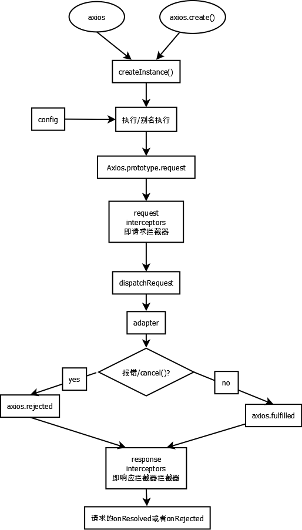

- DecimalIntegerLiteral
- 0
- 第一位非0的整数
- DecimalDights
- 由整数构成（没要求第一位非0）
- DecimalDight
- 差一个s
- 0~9任意一个
- ExpontPart
- 指数部分
- 科学计数法
| abort | 终止 |
| interceptor | 拦截器 |
| pending | 未确定的 |
| resolved | 已解决的 |
| rejected | 拒绝的 |
| iterable | 可迭代的 |
| parse | 解析 |
| radix | 基数 |
| r | radius 半径 |
| invoke | 调用 |
| orient | 朝向 |
| extend | 延伸，扩展 |
| derive | 源于，派生 |
| closure | 闭包 |
| Regular Expression | 正则表达式 |
| sibling | 兄弟姐妹 |
| previous | 以前的 |
| interval | 间隔 |
| navigator | 导航员(浏览器类型) |
| property | 特性 |
| extension | 扩展 |
| configurable | 可配置的 |
| writable | 可写的 |
| enumrable | 可枚举的 |
| seal | 密封 |
| exponent | 指数 |
| fraction | 小数 |
| epsilon | 希腊字母中表示极小值的那个 |


// 获取strObject的构造函数类型
var objectType = Object.prototype.toString.call(strObject);
console.log(objectType.substring(8, objectType.length - 1));
// 获取strObject的构造函数类型
var objectType = Object.prototype.toString.call(strObject);
console.log(objectType.substring(8, objectType.length - 1));
Object.keys(obj)
Object.assign(target, ...sources)
const newObj = Object.assign({}, oldObj);

| exponent | fraction | result |
|---|---|---|
| =0 | =0 | (+/-)0 |
| =0 | !=0 | denormalized number 非规格化数 |
| =2047 | =0 | (+/-)无穷 |
| =2047 | =0 | NAN |
类型1：
10.25
第一步：用二进制形式表示
// 小数部分可以用有限的二进制数表示
1010.01
第二步：整数部分只保留1
1.01001 * 2 ^ 3;
第三步：根据公式计算
exponent = 3 + 1023 = 1026
fraction = 01001
类型2：
10.4
第一步：用二进制形式表示
// 小数部分无法使用有限的二进制数表示，则要用近似的表示方法，二进制至少要保留52位
1010.01100 01100 ...(保留52位)
第二步：整数部分只保留1
1.010 01100 01100 ...(保留52位) * 2 ^ 3
第三步：根据公式计算
exponent = 3 + 1023 = 1026
fraction = 010 01100 01100 ...(保留52位)
例1：
>>> 1.4 - 1.1
0.2999999999999998
为什么不是0.3？
/*
1.4和1.1两个数都不能被精确表示，用[4]的链接可以将浮点数字面量转换成真实存储的值，可以看到1.4被近似成了1.399999999999999，1.1被近似成了1.10000000000000008所以两数相减得到的不是0.3而是0.2999999999999998。
*/
例2：
4.0 + 1e+16 - 1e+16
>>> 4.0
没错。
5.0 + 1e+16 - 1e+16
>>> 4.0
为什么5变成了4？
/*
所以在例2中 ，恰巧第16位有效数字是部分精确的，4可以被精确表示，因为最后一位并不能表示5，所以出现了浮点数误差。
*/
4.0 + 1e+17 - 1e+17
>>> 0.0
为什么结果是0.0？ 4去哪了？
/*
4已经在第17位，超出了双精度浮点数的最大有效位数，就被忽略了，所以有[公式] 。
*/
function Fn() {
}
const fn = new Fn()
// 构造函数的确定，是由后面调用决定的，即后面有没有new
console.log(Fn.prototype)
// 从这可以将Fn理解为一个对象
// 如何看出它的对象特点
// 该函数有属性和方法时，可以看作为对象
Fn.bind({})
// 所有的函数当时Function的实例，所以对应有bind方法
$("#test")
// 此时$是一个函数
$.get("/test")
// 此时$是一个对象
a.b.c()
// 括号前面的必然是函数即a.b.c为函数
// 其中a,b为对象
const arr = [1, 2, 3];
arr.forEach(item => {
console.log(item)
})
console.log(arr)
// 先输出item，在输出arr
setTimeout(() => {
...
}, 0)
// 执行完后面的函数再执行该异步
new Error(content)
// 显示content的错误
try {
let d;
console.log(d.xxx)
}
catch(error) {
console.log(error.message);
// console.log(error.stack)
}
console.log("hello_world");
// 仍能正常的运行
if(Date.now() % 2 === 0)
alert("执行完毕")
else{
throw new Error("不能执行")
}
function fn1() {
this.name = "hello"
}
function fn2() {
this.word = "world";
}
fn2Object = new fn2();
fn1.apply(fn2Object)
// 执行fn1的代码，并将fn1的this所指的属性和方法加入到fn2Object
//
console.dir(fn2Object)
console.dir(fn2)
// bind函数的理解
// 语法上：返回一个函数wrap
// 功能上：若是调用warp函数并传入参数
// fn根据传递的参数执行并且thisArg将继承fn的属性和方法
// 之后返回值：undefine
function bind(fn, thisArg) {
return function wrap() {
//根据传入的参数来调用fn
var args = new Array(arguments.length);
console.log(args);
for (var i = 0; i < args.length; i++) {
args[i] = arguments[i];
}
//用apply来实现绑定
return fn.apply(thisArg, args);
};
};
function fn1(name) {
this.name = name
}
function fn2() {
this.word = "world";
}
fn2Object = new fn2();
console.log(bind(fn1, fn2Object)("hello"))
console.dir(fn2)
/*
undefined
fn2
name: "hello"word: "world"
*/
<a href="" onclick="alert('hello_world')>我是a元素</a>
<a href="javascript: alert('hello_world')" >我是a元素</a>
<script src="..."> //hello_world
/*
hello_world
*/
/*
* test 函数
*/

typeof undefined === "undefined"; // true
typeof true === "boolean"; // true
typeof 42 === "number"; // true
typeof "42" === "string"; // true
typeof { life: 42 } === "object"; // true
// ES6中新加入的类型
typeof Symbol() === "symbol"; // true
// 特殊
function foo() {
// ...
}
typeof foo === "function" // true
// null比较特殊
typeof null === "object" //true
// typeof对于只声明而没有赋值的变量返回undefined，对于没有声明的变量也是返回undefined且不报错
var a;
typeof a === "undefined" //true
typeof b === "undefined" //true
!a && typeof a === "object"
// 若a=null, 返回true
ReferenceError: b is not defined
var a = [];
a[1] = 2;
a[4] = 4;
console.log( a[2] ) // undefined
function foo() {
var arr = Array.prototype.slice.call(arguments);
console.log(arr);
console.log(arr instanceof Array)
}
foo("a", "b", "c");
// ["a", "b", "c"]
// true
function foo() {
var arr = Array.from(arguments);
console.log(arr);
console.log(arr instanceof Array)
}
foo("a", "b", "c");
// ["a", "b", "c"]
// true
var a = "hello";
var b = ["h", "e", "l", "l", "o"];
console.log(a.length); // 5
console.log(b.length); // 5
console.log(a.indexOf("o")); // 4
console.log(b.indexOf("o")); //4
a = a.concat(" world");
b = b.concat([" ", "w", "o", "r", "l", "d"]);
console.log(a) // "hello world"
console.log(b)
var a = "hello"
var b = ["h", "e", "l", "l", "o"];
a[0] = "H";
b[0] = "H"
console.log(a) //"hello"
console.log(b) //["H", "e", "l", "l", "o"]
var c = Array.prototype.join.call( a, "-" );
var d = Array.prototype.map.call( a, function(v){
return v.toUpperCase() + ".";
} ).join( "" );
c; // "f-o-o"
d; // "F.O.O."
var a = a.split("")
.reserve()
.join("")
// 但对简单的字符串却完全适用
console.log( 0.1 + 0.2 === 0.3) // false
// 原因：0.1和0.2都无法规范为有限的浮点数形式
// 前15位为精确的，第16位部分精确
var a = 0.1 + 0.2;
var b = 0.3;
console.log(Math.abs(b - a) < Math.pow(2, -52))
var a = 0.1 + 0.2;
var b = 0.3;
console.log(Math.abs(b - a) < Number.EPSLION)
number | 0
console.log(NaN == NaN) //false
console.log(NaN === NaN) //false
var a = NaN;
console.log(Number.isNaN(a))
if(!Number.isNaN) {
Number.isNaN = function(n) {
return n !== n
}
}
console.log(1 / 0) // Infinity
console.log(-1 / 0) // -Infinity
var a = -0;
a.toString(); // "0"
a + ""; // "0"
String( a ); // "0"
JSON.stringify( a ); // "0"
+"-0"; // -0
Number( "-0" ); // -0
JSON.parse( "-0" ); // -0
function isNegZero(n) {
n = Number(n);
return n === 0 && 1 / n === -Inifity
}
if (!Object.is) {
Object.is = function(v1, v2) {
// 判断是否是-0
if (v1 === 0 && v2 === 0) {
return 1 / v1 === 1 / v2;
}
// 判断是否是NaN
if (v1 !== v1) {
return v2 !== v2;
}
// 其他情况
return v1 === v2;
};
}
function foo() {
undefined = 2;
console.log(undefined)
}
foo();
// 2
function foo() {
"use strict";
undefined = 2; // TypeError!
}
foo();
function foo() {
"use strict";
var undefined = 2;
console.log( undefined ); // 2
}
foo();
var a = 42;
console.log( void a, a ); // undefined 42

function foo(x) {
x.push( 4 );
x; // [1,2,3,4]
// 然后
x = [4,5,6];
x.push( 7 );
x; // [4,5,6,7]
}
var a = [1,2,3];
foo( a );
a; // 是[1,2,3,4]，不是[4,5,6,7]
function foo(x) {
x = x + 1;
x; // 3
}
var a = 2;
var b = new Number( a ); // Object(a)也一样
foo( b );
console.log( b ); // 是2，不是3
var a = new Array( 1, 2, 3 );
// 参数列表， arr
a; // [1, 2, 3]
var b = [1, 2, 3];
b; // [1, 2, 3]
var a = Array.apply( null, { length: 3 } );
// 通过该方法来构建长度为3的参数
// 相当于Array(undefined, undefined, undefined)
var name = "Kyle";
var namePattern = new RegExp( "\\b(?:" + name + ")+\\b", "ig" );
var matches = someText.match( namePattern );
console.log(Date.now)
if(!Date.now) {
Date.now = function() {
return new Date().getTime();
}
}
var mysym = Symbol( "my own symbol" );
mysym; // Symbol(my own symbol)
mysym.toString(); // "Symbol(my own symbol)"
typeof mysym; // "symbol"
obj[Symbol.iterator] = function(){ /*..*/ };
var mysym = Symbol( "my own symbol" );
mysym; // Symbol(my own symbol)
mysym.toString(); // "Symbol(my own symbol)"
typeof mysym; // "symbol"
var a = { };
a[mysym] = "foobar";
Object.getOwnPropertySymbols( a );
// [ Symbol(my own symbol) ]
// 1. undefined和null
Object.prototype.toString.call( null );
// "[object Null]"
Object.prototype.toString.call( undefined );
// "[object Undefined]"
// 2. 基本类型
Object.prototype.toString.call( "abc" );
// "[object String]"
Object.prototype.toString.call( 42 );
// "[object Number]"
Object.prototype.toString.call( true );
// "[object Boolean]"
// 3. 复合类型
Object.prototype.toString.call( [1,2,3] );
// "[object Array]"
Object.prototype.toString.call( /regex-literal/i );
// "[object RegExp]"
String#indexOf(..)
在字符串中找到指定子字符串的位置。
String#charAt(..)
获得字符串指定位置上的字符。
String#substr(..)、String#substring(..) 和 String#slice(..)
获得字符串的指定部分。
String#toUpperCase() 和 String#toLowerCase()
将字符串转换为大写或小写。
String#trim()
去掉字符串前后的空格，返回新的字符串。
// 以上方法并不改变原字符串的值，而是返回一个新字符串
var vals = Array.prototype;
var fn = Function.prototype;
var rx = RegExp.prototype;
var a = {};
console.log(String(a));
// [object Object]
var b = {
c: 2,
d: 3,
toString() {
var str = "";
Object.keys(this).forEach(key => {
if(typeof this[key] !== "function")
str = str + key + ": " + this[key] + " ";
})
return str;
}
}
console.log(String(b));
// c: 2 d: 3
JSON.stringify( 42 ); // "42"
JSON.stringify( "42" ); // ""42"" （含有双引号的字符串）
JSON.stringify( null ); // "null"
JSON.stringify( true ); // "true"
JSON.stringify( undefined ); // undefined
JSON.stringify( function(){} ); // undefined
JSON.stringify(
[1,undefined,function(){},4]
); // "[1,null,null,4]"
JSON.stringify(
{ a:2, b:function(){} }
); // "{"a":2}"
var a = {
b: 5,
c: 4
}
// 只JSON化对象和对应的b属性
a.toJSON = function() {
return {
b: this.b
}
}
console.log(JSON.stringify(a))
//
var a = {
b: 42,
c: "42",
d: [1,2,3]
};
JSON.stringify( a, ["b","c"] ); // "{"b":42,"c":"42"}"
JSON.stringify( a, function(k,v){
if (k !== "c") return v;
} );
// "{"b":42,"d":[1,2,3]}"
var a = {
b: 42,
c: "42",
d: [1,2,3]
};
JSON.stringify( a, null, "-----" );
// "{
// -----"b": 42,
// -----"c": "42",
// -----"d": [
// ----------1,
// ----------2,
// ----------3
// -----]
// }"
var a = [1, 3, 4]
console.log(Number(a)) // NaN
/**
* 无valueOf函数
* 有toString函数："1,3,4"
* string不符合Number语法：返回NaN
*/
var b = {a: 1, b: 2} // NaN
/**
* 无valueOf函数
* 有toString函数:Object#toString.call(a) [object, object]
* string不符合Number语法：返回NaN
*/
var c = "134"
console.log(console.log(c)) // 134
var d = []
/**
* 无valueOf函数
* 有toString函数：""
* string为空，返回0
*/
var a = new Boolean(false);
console.log(Boolean(a));
// true
var b = [];
console.log(Boolean(b))
// true
var a = [1,4,5]
console.log(Number(a));
// NaN
console.log(parseInt(a));
// 1
parseInt( 0.000008 ); // 0 ("0" 来自于 "0.000008")
parseInt( 0.0000008 ); // 8 ("8" 来自于 "8e-7")
parseInt( false, 16 ); // 250 ("fa" 来自于 "false")
parseInt( parseInt, 16 ); // 15 ("f" 来自于 "function..")
parseInt( "0x10" ); // 16
parseInt( "103", 2 ); // 2
console.log(typeof 123 + '')
// string
function foo(a, value) {
if(~a.indexOf(value)) {
console.log(value + " in a");
}
else {
console.log("Not in");
}
}
var a = [1,3,4]
foo(a, 3);
foo(a, 5);
// 3 in a
// Not in
var a = []
console.log([] + "")
// ""
var b = {};
console.log(b + "")
// [object, Object]
console.log(100 - "95");
// 5
console.log(100 - 'abc');
// NaN
var a = Symbol("hello")
console.log(String(a))
// "Symbol(hello)"
console.log(a + "")
// TypeError
2 == [2]; // true
/**
* 数值 == 对象
* 2 == ToString([2]) --> "2"
* 数值 == 字符串
* 2 == ToNumber("2") --> 2
* true
*/
"" == [null]; // true
/**
* 字符串 == 对象
* "" == ToString([null]) --> ""
* true
*/
42 == "43"; // false
/**
* 数值 == 字符串
* 42 == ToNumber("43") --> 43s
* false
*/
42 == "foo"; // false
/**
* 数值 == 字符串
* 42 == ToNumber("foo") --> NaN
* false
*/
"true" == true; // false
/**
* 字符串 == 布尔值
* ToNumber("true") --> NaN == ToNumber(true) --> 1
* false
*/
"foo" == [ "foo" ]; // true
/**
* 字符串 == 对象
* "foo" == ToString(["foo"]) --> "foo"
* true
*/
(1) 如果 Type(x) 是数字，Type(y) 是字符串，则返回 x == ToNumber(y) 的结果。 (2) 如果 Type(x) 是字符串，Type(y) 是数字，则返回 ToNumber(x) == y 的结果。
(1) 如果 Type(x) 是布尔类型，则返回 ToNumber(x) == y 的结果； (2) 如果 Type(y) 是布尔类型，则返回 x == ToNumber(y) 的结果。
// 这样的显式用法没问题：
if (a) {
// ..
}
// 这样的显式用法更好：
if (!!a) {
// ..
}
// 这样的显式用法也很好：
if (Boolean( a )) {
// ..
}
(1) 如果 x 为 null，y 为 undefined，则结果为 true。 (2) 如果 x 为 undefined，y 为 null，则结果为 true。
var a = doSomething();
if (a == null) {
// ..
}
// 相当于
var a = doSomething();
if (a === undefined || a === null) {
// ..
}
(1) 如果 Type(x) 是字符串或数字，Type(y) 是对象，则返回 x == ToPrimitive(y) 的结果； (2) 如果 Type(x) 是对象，Type(y) 是字符串或数字，则返回 ToPromitive(x) == y 的结果。
"0" == null; // false
/**
* 字符串 == null
* ToNumber("0")--> 0 == null
* false
*/
"0" == undefined; // false
/**
* 字符串 == undefined
* ToNumber("0")--> 0 == undefined
* false
*/
"0" == false; // true -- 晕！
/**
* 字符串 == 布尔
* "0" == ToNumber(false) -> 0
* 字符串 == 数值
* ToNumber("0")--> 0 == 0
* True
*/
"0" == NaN; // false
/**
* 字符串 == NaN
* ToNumber("0")--> 0 == NaN
* false
*/
"0" == 0; // true
/**
* 字符串 ==数值
* ToNumber("0")--> 0 == 0
* true
*/
"0" == ""; // false
/**
* 字符串 == 字符串
* false
*/
false == null; // false
/**
* 布尔值 == null
* ToNumber(false)--> 0 == null
* false
*/
false == undefined; // false
/**
* 布尔值 == undefined
* ToNumber(false)--> 0 == undefined
* false
*/
false == NaN; // false
/**
* 布尔值 == NaN
* ToNumber(false)--> 0 == NaN
* false
*/
false == 0; // true -- 晕！
/**
* 布尔值 == 数值
* ToNumber(false)--> 0 == 0
* true
*/
false == ""; // true -- 晕！
/**
* 布尔值 == 字符串
* ToNumber(false)--> 0 == ""
* 数值 == 字符串
* 0 == ToNumber("") --> 0
* true
*/
false == []; // true -- 晕！
/**
* 布尔值 == 对象
* ToNumber(false)--> 0 == []
* 数值 == 字符串
* 0 == ToNumber([]) --> 0
* true
*/
false == {}; // false
/**
* 布尔值 == 对象
* ToNumber(false)--> 0 == {}
* 数值 == 字符串
* 0 == ToNumber([]) --> [object, Object] --> NaN
* false
*/
"" == null; // false
"" == undefined; // false
"" == NaN; // false
"" == 0; // true -- 晕！
// toNumber("") -> 0
"" == []; // true -- 晕！
// toNumber("") -> 0 toNumber([]) == 0
"" == {}; // false
// toNumber("") -> 0 toNumber([])
0 == null; // false
0 == undefined; // false
0 == NaN; // false
0 == []; // true -- 晕！
/**
* 数值 == 对象
* 0 == ToNumber([]) --> 0
* true
*/
0 == {}; // false
/**
* 数值 == 对象
* 0 == ToNumber({}) --> [object, Object] --> NaN
* false
*/
[] == ![] // true
// !先执行，将其转化为对应的相反的布尔值：false, [] == false
// 都ToNumber([]) --> 0 == ToNumber(false) == 0
var a = { b: 42 };
var b = { b: 43 };
a < b; // false
a == b; // false
a > b; // false
a <= b; // true
/*
* 因为a>b为false，所以取反为true
*/
a >= b; // true
let arr1 = new Array(1, 2, 3);
let arr2 = Array.of(3);
let arr3 = [1, 2, 4];
console.log(arr1);
console.log(arr2);
console.log(arr3);
// [1, 2, 3]
// [3]
// [1, 2, 4]
function list() {
return Array.prototype.slice.call(arguments);
// return [].slice.call(arguments)
}
var list1 = list(1, 2, 3); // [1, 2, 3]
// 1. 用于替换数组中的第index元素
// Array#splice(index, 1, replacement)
let arr = [1, 2, 4];
console.log("arr: ", arr);
arr.splice(1, 1, 3);
console.log("arr: ", arr);
// [1, 2, 4] [1, 3, 4]
// 2. 用于向index插入元素
// Array#splice(index, 0, addition)
let arr1 = [1, 2, 4];
console.log("arr1: ", arr1);
arr1.splice(1, 0, 3);
console.log("arr1: ", arr1);
// [1, 2, 4] [1, 5]
// 3. 删除index之后(包含index）的元素
// Array#splice(index, Array.lenght - index)
let arr2 = [1, 2, 4];
console.log("arr2: ", arr2);
arr2.splice(1, arr2.lenght - 1);
console.log("arr2: ", arr2);
// [1, 2, 4] [1]
class Foo {
constructor(value) {
this.value = value;
}
}
const arr = [new Foo(3), new Foo(5), new Foo(4)];
/*无法进行排序
arr.sort();
console.log(arr);
*/
arr.sort((ele1, ele2) => {
if(ele1.value < ele2.value)
return -1;
else
return 1;
});
console.log(arr);
// 3，4，5
function sum(...argv) {
return argv.reduce((preValue, currentValue) => preValue + currentValue, 0);
}
function mul(...argv) {
return argv.reduce((preValue, currentValue) => preValue * currentValue, 1);
}
const arr = [1, 2, 3, 4, 5];
console.log(sum(...arr));
console.log(mul(...arr));
// 15 120
事物的特征，在对象中用属性来表示
对象的行为，在对象中用方法来表示
// 文字形式
var obj = {
// ...
}
// 构造形式
var obj = new Object();
myObj.key = value;
let obj = {
a: 4;
}
let obj1 = new Object();
let obj = new Foo();
let obj = Object.create(Foo.prototype)
// 实例对象的__proto__指向类的原型对象
var myObject - {
a: 2
}
console.log(myObject.a)
var myObject - {
a: 2
}
console.log(myObject["a"])
obj.a //返回undefined
prop in obj
obj.hasOwnProperty(prop)
const newObj = {}
function deepCopy(oldObj, newObj) {
Object.keys(oldObj).forEach((key, index) => {
let value = oldObj[key];
if(value instanceof Array) {
newObject[key] = [];
deepCopy(value, newObject[key]);
}
else if(value instanceof Object) {
newObject[key] = {};
deepCopy(value, newObject[key]);
}
else {
newObject[key] = value;
}
})
}
{
value: 2,
writable: true/false;
configurable: true/false;
enumerable: true/false;
// 在访问该属性时调用
get() {
// ...
return
}
// 在修改该属性时调用
set() {
// ...
}
}
Object.defineProperty(obj, prop, descriptor)
var obj = {};
Object.definePropety(obj, "a", {
value: 2,
writable: false,
configurable: true,
enumerable: true
})
Object.preventExtensions(obj);
Object.isExtensions(obj)
// 判断一个对象是否是不可扩展的对象
Object.seal(obj);
Object.freeze(obj);
obj.propertyIsEnumerable(prop);
Object.getPropertySymbols(obj)
function Foo(name) {
this.name = name;
}
Foo.sayKeyWord = function() {
console.log("hello world");
}
Foo.prototype.sayName = function() {
console.log(this.name)
}
const obj = new Foo("bulumrcai");
obj.sayName();
Foo.sayKeyWord();
console.log("sayKeyWord can be excuted by obj :", obj.sayKeyWord);
console.log("sayName can be excuted by Foo :", Foo.sayName);
/*
bulumrcai
hello world
sayKeyWord can be excuted by obj : undefined
sayName can be excuted by Foo : undefined
*/
function Foo {
constructor() {
this.name = name;
}
static sayKeyWord() {
console.log("hello world");
}
sayName() {
console.log(this.name);
}
}
const obj = new Foo("bulumrcai");
obj.sayName();
Foo.sayKeyWord();
console.log("sayKeyWord can be excuted by obj :", obj.sayKeyWord);
console.log("sayName can be excuted by Foo :", Foo.sayName);
/*
bulumrcai
hello world
sayKeyWord can be excuted by obj : undefined
sayName can be excuted by Foo : undefined
*/
Son.prototype = Object.create(Father.prototype);
Son.constructor = Son;
实例对象
{
// ...其他成员
__proto__: { //构造函数的原型对象
__proto__: 父类原型对象，
constructor: 构造函数的名字,
...
// ......该构造函数原型的方法
}
}
// 父类原型对象
{
__proto__: 父类原型对象，
constructor: 构造函数的名字,
...
// ......该构造函数原型的方法
}

var obj = {
a: 2
}
var newObj = Object.create(obj)
console.log(newObj.a)
newObj.a ++;
// newObj.a = newObj.a + 1 相当于一个设置属性的过程
console.log(obj.a)
console.log(newObj.a)
// 2
// 2
// 3
function Father(name) {
this.name = name;
}
Father.welcome = function() {
console.log("welcome");
}
Father.prototype.sayName = function() {
console.log(this.name);
}
function Son(name, label) {
Father.call(this, name);
this.label = label;
}
Son.prototype = Object.create(Father.prototype);
// Object.create(Father.prototype)
// 创建了一个对象，该对象的__proto__属性指向Father.prototype
Son.prototype.constructor = Son;
Son.prototype.sayLabel = function() {
console.log(this.label);
}
console.dir(Son);
const son = new Son("bulumrcai", "hello world");
console.dir(son);
son.sayLabel();
son.sayName();
// Son.welcome(); // TypeError
// 若要正常使用静态成员，则需要加上
Son.prototype.constructor.__proto__ = Father;
Son.welcome();
{
// ...Father中this指向的属性
__proto__: Father.prototype
}
Son.prototype.constructor.__proto__ = Father;
class Father {
constructor(name) {
this.name = name;
}
sayName() {
console.log(this.name);
}
static welcome() {
console.log("welcome");
}
}
class Son extends Father {
constructor(name, label) {
super(name);
this.label = label;
}
sayLabel() {
console.log(this.label);
}
}
console.dir(Son);
const son = new Son("bulumrcai", "hello world");
console.dir(son);
son.sayLabel();
son.sayName();
Son.welcome(); // 能够正常的使用
function Foo() {
// ...
}
var obj = new Foo();
console.log(obj.__proto__ === Foo.prototype)
console.log(Object.getPrototypeOf(obj) === Foo.prototype)
// true true
function Foo() {
// ...
}
console.log(Foo === Foo.prototype.constructor)
// true
function Foo() {
// ...
}
Foo.prototype.constructor = {};
var obj = new Foo();
console.log(obj.constructor === Foo)
// false
console.log(obj instanceof Father)
// obj的原型链中是否有指向Fahter.prototype
c.isPrototypeOf(b)
// c对象是否出现在b对象的原型链中
var obj = {};
var newObj = Object.create(obj);
/*
{
__proto__: obj
}
*/
console.log(obj.isPrototypeOf(newObj))
// true
Object.defineProperty( Object.prototype, "__proto__", {
get: function() {
return Object.getPrototypeOf( this );
},
set: function(o) {
// ES6 中的 setPrototypeOf(..)
Object.setPrototypeOf( this, o );
return o;
}
} );
function 函数名() {
函数封装的代码
...
}
函数名()
const foo = function 函数名() {
函数封装代码
...
}
foo();
const foo = function() {
函数封装代码
...
}
foo();
function print(val) {
console.log(val);
console.log(arguments)
}
print("hello", "world")

fuction sum() {
arguments.reduce((prevalue, value) => prevalue + value, 0)
}


(function (arg1...) {
函数封装代码
...
} )(arg1...)
(function (arg1...) {
函数封装代码
...
}(arg1...) )
const foo = function 函数名(arg1...) {
函数封装代码
...
}(arg1...)
const foo = function (arg1...) {
函数封装代码
...
}(arg1...)
function foo(a) {
console.log(a)
}
foo(2);
// a = 2 为LHS查询，参数的传递
// console.log(a) 为RHS查询
function foo(a) {
var b = a;
return a + b;
}
var c = foo(2)
/**
* 三次LHS查询
* 1 调用函数时，a需要进行LHS引用
* 2 b需要进行LHS引用
* 3 c需要进行LHS引用
* 四次RHS查询
* 1 调用foo函数：js引擎询问在该作用域当中有没有foo函数
* 2 赋值b时，js询问a的值
* 3 在return时，询问a,b的值
* 4 赋值c时，js询问函数的返回值
*/
function foo(a) {
console.log(a + b);
b = a;
}
foo(2)
/*
*b是一个未声明的变量，所以进行RHS查询时无法找到，是一个undefined类型，抛出ReferenceError
*若RHS查询对变量进行不符合规范的引用，如变量不是函数全被调用成函数, 抛出TypeError
* 对b进行LHS查询，由于b没有声明，若在非严格模式下，js引擎会自动帮你创建一个全局变量
*若严格模式下, js引擎会抛出ReferenceError
*/
function foo(str, a) {
eval(str); // 欺骗
console.log(a, b);
}
var b = 2;
foo("var b = 3;", 1) // 1, 3
// 当 console.log(..) 被执行时，会在 foo(..) 的内部同时找到 a 和 b，但是永远也无法找到外部的 b
function foo(str) {
"use strict"
eval(str)
console.log(a);
}
foo("var a = 2");
// ReferenceError: a is not defined
function foo(a) {
var b = 2;
function bar() {
// ...
}
var c = 3;
}
// 全局作用域气泡：foo
// foo函数作用域气泡：a, b, bar, c
// 所以全局无法访问a, b, bar, c
function doSomething(a) {
b = a + doSomethingElse(a * 2);
console.log(b * 3);
}
function doSomethingElse(a) {
return a - 1;
}
var b;
doSomething(2);
// 在这个代码片段中，变量 b 和函数 doSomethingElse(..) 应该是 doSomething(..) 内部具体实现的“私有”内容
// 由于b在外部没有用到，所以最好是作为函数作用域内的变量，而不是放在外面
function foo() {
function bar(a) {
i = 3;
console.log(a + i);
}
for(var i = 0;i < 10;i ++) {
bar(i * 2);
}
}
// 会陷入无限的循环
// bar(..) 内部的赋值表达式 i = 3 意外地覆盖了声明在 foo(..) 内部 for 循环中的 i
// 解决方法：在bar函数内部内部声明一个i变量或者其他变量
// 内部作用域的声明的变量由于嵌套的访问的原因会被优先采用，且不会影响外部同名变量的值
// 赋值表达式
const a = function() {
// ...
}
// 函数的参数
function foo(def) {
def();
}
foo(function() {
// ...
})
// 立即执行函数表达式
(function(args){
// ...
})(args)
(function(args) {
// ...
}(args))
// 法1
(function(args){
// ...
})(args)
// 法2
(function(args) {
// ...
}(args))
{
var a = 10;
}
console.log(a);
// 10
// 函数及作用域
function foo() {
var a = 10;
}
console.log(a);
// undefined referenceError
try{
// ...
}
catch(err) {
console.log(err)
}
console.log(err);
// undefined referenceError
var foo = true;
if(foo) {
let bar = foo * 2;
console.log(bar);
}
console.log(bar);
// 2
// undefined referenceError
(看书补充)
for(let i = 0;i < 10;i ++) {
console.log(i);
}
console.log(i)
// undefined referenceError
{
let j;
for(j = 0;j < 10;j ++) {
let i = j;
console.log(i);
}
}
var a = 2;
// 实际上执行的过程
var a; // 声明阶段
a = 2; // 执行阶段
// 练习一
a = 2;
var a;
console.log(a);
// 等价于:
var a;
a = 2;
console.log(a);
// 2
// 练习二
console.log(a);
var a = 2;
// 等价于
var a;
console.log(a);
a = 2;
// undefine;
// 2
foo();
function foo() {
console.log( a );
var a = 2;
}
// 等价于
function foo() {
var a;
console.log( a );
a = 2;
}
foo();
// undefined;
foo();
var foo = function() {
// ...
}
// TypeError
// 等价于
var foo;
foo();
foo = function() {
// ...
}
foo();
bar();
var foo = function bar() {
// ...
}
// TypeError
// ReferenceError 没有声明bar()
foo();
var foo = 2;
function foo() {
console.log(1);
}
// 1
foo();
var a = true;
if(a) {
function foo() {
console.log( "a" );
}
}
else{
function foo() {
console.log( "b" );
}
}
// b
function foo() {
var a = 2;
function bar() {
console.log( a );
}
bar();
}
foo();
function foo() {
var a = 2;
function bar() {
console.log( a );
}
return bar;
}
var baz = foo();
baz(); // 根据调用的位置，该baz应该访问的是baz内部定义的变量，但是它仍可以访问foo内部的变量
function foo() {
var a = 2;
function bar() {
console.log( a );
}
return bar;
}
var baz = foo();
baz();
// 2
function foo() {
var a = 2;
function bar() {
console.log( a );
}
baz(bar);
}
function baz(fn) {
fn();
}
foo();
// 2
// bar在baz函数作用域执行,仍然调用其词法作用域的内容
function wait(args) {
setTimeout(function timer() {
// ...有用到args
}, 1000)
}
// 在其他作用域调用了timer函数,但仍然可以访问到args
var baz;
function foo() {
var a = 2;
function bar() {
console.log( a );
}
baz = bar;
}
foo();
baz();
// 2
// bar在全局作用域执行,仍然调用其词法作用域的内容
for(var i = 0;i <= 5;i ++) {
setTimeout(function() {
console.log(i);
}, 1000)
}
// 6 6 6 6 6 6
for(var i = 0;i <= 5;i ++) {
(function() {
var j = i;
setTimeout(function() {
console.log(j);
}, 1000)
})()
}
for(var i = 0;i <= 5;i ++) {
(function(j) {
setTimeout(function() {
console.log(j);
}, 1000)
})(i)
}
for(let i = 0;i <= 5;i ++) {
setTimeout(function() {
console.log(i);
}, 1000)
}
function foo() {
var something = "cool";
var another = [1, 2, 3];
function doSomething() {
console.log(something);
}
function doAnother() {
console.log(another);
}
return {
doSomething: doSomething,
doAnother: doAnother
}
}
var CoolModule = foo();
CoolModule.doSomething();
CoolModule.doAnther();
var args = undefined;
var module1 = (function(args) {
var something = "cool";
var another = [1, 2, 3];
function doSomething() {
console.log(something);
}
function doAnother() {
console.log(another);
}
return {
doSomething: doSomething,
doAnother: doAnother
}
})(args)
module1.doSomething();
module1.doAnother();
function baz() {
/*
* 第二步
* 当前的调用栈是:baz
* 当前的调用位置是全局作用域
*/
console.log("baz");
bar(); // 第三步: bar的调用位置
}
function bar() {
/*
* 第四步
* 当前的调用栈是:baz -> bar
* 当前的调用位置是baz中
*/
console.log("bar");
foo(); // 第五步: foo的调用位置
}
function foo() {
/*
* 第六步
* 当前的调用栈是:baz -> bar -> foo
* 当前的调用位置是bar中
*/
console.log("foo");
}
baz(); // 第一步:baz的调用位置
function foo() {
console.log(this.a);
}
var a = 2;
foo();
// 2
function foo() {
"use strict";
console.log(this.a);
}
var a = 2;
foo();
// TypeError: this is undefined
function foo() {
console.log(this.a);
}
var obj2 = {
a: 42,
foo: foo
}
var obj1 = {
a:2,
obj2:obj2
}
obj1.obj2.foo()
// 42
// 相当于这种形式
function foo() {
console.log(this === window);
console.log(this.a);
}
var obj1 = {
a: 2,
foo: foo
}
var a = "hello world"
var bar = obj1.foo;
bar();
//true "hello world"
var obj1 = {
a: 2,
foo: function() {
console.log(this === window);
console.log(this.a);
}
}
var a = "hello world"
var bar = obj1.foo;
bar();
//true "hello world"
function foo() {
console.log(this === window);
console.log(this.a);
}
var obj1 = {
a: 2,
foo: foo
}
function doFunc(fn) {
fn();
}
var a = "hello world"
doFunc(obj1.foo);
//true "hello world"
// setTimeout的回调函数也有类似的作用
function foo() {
console.log(this === window);
console.log(this.a);
}
var obj1 = {
a: 2,
foo: foo
}
var a = "hello world"
var bar = foo.bind(obj1);
bar();
// false 2
var obj = {
id: "awesome"
};
[1, 2, 3].forEach( function(el) {
console.log( el, this.id );
}, obj );
/*
1 awesome
2 awesome
3 awesome
*/
function foo(a,b) {
console.log( "a:" + a + ", b:" + b );
}
var ø = Object.create(null);
// 把数组展开成参数
foo.apply( ø, [2, 3] ); // a:2, b:3
// 使用 bind(..) 进行柯里化
var bar = foo.bind( ø, 2 );
ar( 3 );
function foo() {
console.log(this.a);
}
var a = 2;
var o = {
a: 3,
foo: foo
}
var p = {
a: 4
}
o.foo()
(p.foo = o.foo) ()
// 间接引用是默认绑定
// 3
// 2
const obj = {
foo() {
console.log(this);
}
}
function baz(func){
func();
}
obj.foo();
baz(obj.foo);
// obj
// window
function foo() {
console.log("name: " + this.name);
}
var obj = { name: "obj" },
obj2 = { name: "obj2" },
obj3 = { name: "obj3" };
var fooOBJ = foo.softBind( obj );
fooOBJ(); // name: obj
obj2.foo = foo.softBind(obj);
// 此时为默认绑定
obj2.foo(); // name: obj2 <---- 看！！！
fooOBJ.call( obj3 ); // name: obj3 <---- 看！
setTimeout( obj2.foo, 10 );
// name: obj <---- 应用了软绑定
function Father(name) {
this.name = name;
}
Father.prototype.getName = function() {
return this.name;
}
// 继承
function Son(name, label) {
this.label = label;
Father.call(this, name);
}
Son.prototype = Object.create(Father.prototype);
Son.prototype.getLabel = function() {
return this.label;
}
Son.prototype.printAll = function() {
console.log(this.getName(), this.label)
}
var son = new Son("hello world", 2);
son.printAll();
console.log(son.getName());
console.dir(son);
class Father {
constructor(name) {
this.name = name;
}
getName() {
return this.name;
}
}
class Son extends Father {
constructor(name, label) {
super(name);
// super指的是同名的父类函数
this.label = label;
}
getLabel() {
return this.label;
}
printAll() {
console.log(this.getName(), this.label)
}
}
var son = new Son("hello world", 2);
son.printAll();
console.log(son.getName());
console.dir(son)
var Father = {
fatherInit(name) {
this.name = name;
},
getName() {
return this.name;
}
}
var Son = Object.create(Father);
Son.sonInit = function(name, label) {
this.label = label;
this.fatherInit(name);
}
Son.getLabel = function() {
return this.label;
}
Son.printAll = function() {
console.log(this.getName(), this.label);
}
var son = Object.create(Son);
son.sonInit("hello world", 2)
son.printAll();
console.log(son.getName());
var Father = {
fatherInit(name) {
this.name = name;
},
getName() {
return this.name;
}
}
var Son = {
sonInit(name, label) {
this.label = label;
this.fatherInit(name);
},
getLabel() {
return this.label;
},
printAll() {
console.log(this.getName(), this.label);
}
}
Object.setPrototypeOf(Son, Father)
var son = Object.create(Son);
son.sonInit("hello world", 2)
son.printAll();
console.log(son.getName());
// new创建实例的本质
function fun(name) {
this.name = name;
}
// 第一步：创建一个原型指向构造函数原型对象的对象
var obj = Object.create(fun.prototype);
// 第二步：将构造函数的this指向该原型对象
// 由于此时执行了一次构造函数，所以会创建一个新的作用域，该作用域中的this指向该原型对象
fun.call(obj, "hello");
// 第三步：
console.log(obj)
var newObj = new fun("hello");
console.log(newObj)
// 继承
function Father(name) {
this.name = name;
}
function Son(name, label) {
this.label = label;
Father.call(this, name);
// 继承Father的this指向的属性
}
// 子类的原型对象是指的原型是指向父类原型的对象
Son.prototype = Object.create(Father.prototype)
var a = 3 * 6;
var b = a;
b;
/*
* 这三行代码都是包含表达式的语句。var a = 3 * 6 和 var b = a 称为“声明语句”
（declaration statement），因为它们声明了变量（还可以为其赋值）。
* a = 3 * 6 和 b = a（不带 var）叫作“赋值表达式”。
* b既是语句有时表达式，称为表达式语句
*/
var a;
console.log(a = 42);
// 42
console.log(var b = 42);
// undefined
var c = do {
if(false) {
var d;
d = 100;
}
}
console.log(c)


// 遍历elements的元素
for(let name of element.getAttributeNames())
{
let value = element.getAttribute(name);
console.log(name, value);
}
// 当垂直滚动条滚动到底的时候有
element.clientHeight === element.scrollHeight - element.scrollTop
function getStyle(obj, name) {
// 判断浏览器版本太麻烦，用什么进行判断？
// 正常浏览器
if(window.getComputedStyle)
return getComputedStyle(obj, null)[name];
else
return obj.currentStyle[name];
// ie8浏览器Style
}
/*
1. 创建子元素对象
2. 给子元素对象赋值
3. 添加到父元素对象中
*/
let childElement = createElement('div');
let text = createTextNode('hello_world');
childElement.appendChild(text);
fatherElement.appendChild(childElement);
fatherElement.innerHTML += childHTML
let childElement = createElement('div');
childElement.innerHTML = 'hello_world' //一般是比较固定的格式
fatherElement.appendChild(childElement);
// 找到父亲节点之后对其进行删除
childObject.parentNode.removeChild(childObject);
elementObject.onclick = function() {
...
return false;
}
/*
* 参数
* 1. obj 要绑定的事件对象
* 2. eventName：事件名称
* 3. callback: 回调函数
*/
// addEventListener()中的callback函数中的this，是绑定事件对象
// attachEvent()中的allback函数中的this是window， 所以需要修改callback的this对象
function bind(obj, eventName, callback){
if(obj.addEventListener)
obj.addEventListener( eventName, callback, false);
else
obj.attachEvent('on' + eventName,function() {
callback.call(obj); //将call的this指向obj
});
}
// callback.bind(obj)
| 事件名称 | 事件基本信息 | 事件触发条件 |
|---|---|---|
| copy |
Bubbles: Yes Cancelable: Yes Target: 获得焦点的元素（即是能够编辑内容的元素) 返回的接口类型(eventType):keyboardEvent |
当用户通过浏览器UI（例如，使用 Ctrl/⌘+C 键盘快捷方式或从菜单中选择“复制”） |
| cut |
Bubbles: Yes Cancelable: Yes Target: element 返回的接口类型(eventType):keyboardEvent |
在将选中内容从文档中删除并将其添加到剪贴板后触发。 |
| paste |
Bubbles: Yes Cancelable: Yes Target: element 返回的接口类型(eventType):keyboardEvent |
当用户在浏览器用户界面发起“粘贴”操作时，会触发paste事件。 |
| 事件属性 | 属性的功能 |
|---|---|
| ClipboardEvent.clipboardData | 是一个 DataTransfer 对象，它包含了由用户发起的 cut 、 copy 和 paste 操作影响的数据,可以通过.getData(fomat)方法得到数据(fomat: "text/plain"，text/"uri-list") |
| 事件名称 | 事件基本信息 | 事件触发条件 |
|---|---|---|
| blur |
Bubbles: No Cancelable: No Target: element 返回的接口类型(eventType):FocusEvent |
当一个元素失去焦点的时候 blur 事件被触发 |
| focus |
Bubbles: No Cancelable: No Target: element 返回的接口类型(eventType):FocusEvent |
focus事件在元素获取焦点时触发 |
| focusout |
Bubbles: Yes Cancelable: No Target: element 返回的接口类型(eventType):FocusEvent |
当元素即将失去焦点时，focusout 事件被触发 |
| focusin |
Bubbles: Yes Cancelable: No Target: element 返回的接口类型(eventType):FocusEvent |
focusin事件在元素获取焦点时触发 |
| 事件属性 | 属性的功能 |
|---|---|
| FocusEvent.relatedTarget | 补充 |
| 事件名称 | 事件基本信息 | 事件触发条件 |
|---|---|---|
| keyup |
Bubbles: Yes Cancelable: Yes Target: 键盘 返回的接口类型(eventType):KeyboardEvent |
当一个按钮按下后被释放时触发 |
| keydown |
Bubbles: Yes Cancelable: Yes Target: 元素 返回的接口类型(eventType):KeyboardEvent |
当一个按钮被按下时触发 |
| 事件属性 | 属性的功能 |
|---|---|
| KeyboardEvent.ctrlKey（只读） | 返回一个Boolean, 如果按键事件ctrl被按下，则为true |
| KeyboardEvent.ctrlKey（只读） | 返回一个Boolean, 如果按键事件产生ctrl被按下，则为true |
| KeyboardEvent.AltKey（只读） | 返回一个Boolean, 如果按键事件产生Alt被按下，则为true |
| KeyboardEvent.shiftKey（只读） | 返回一个Boolean, 如果按键事件产生shift被按下，则为true |
| KeyboardEvent.metaKey（只读） | 返回一个Boolean, 如果按键事件产生窗口按钮被按下，则为true |
| KeyboardEvent.code（只读） | 返回一个DOMString, code代表事件触发的物理按键 |
| KeyboardEvent.repeat（只读） | 返回一个Boolean, 如果按键一直被按住，则返回true |
| 事件名称 | 事件基本信息 | 事件触发条件 |
|---|---|---|
| click |
Bubbles: Yes Cancelable: Yes Target: Element 返回的接口类型(eventType):MouseEvent |
当定点设备的按钮在一个元素对象上按下和放开时触发 |
| dblclick |
Bubbles: Yes Cancelable: Yes Target: Element 返回的接口类型(eventType):MouseEvent |
当定点设备的按钮在一个元素对象上短时间内两次按下和放开时触发 |
| mousedown |
Bubbles: Yes Cancelable: Yes Target: Element 返回的接口类型(eventType):MouseEvent |
当定点设备的按钮在一个元素对象上被（连续）按下时触发 |
| mouseup |
Bubbles: Yes Cancelable: Yes Target: Element 返回的接口类型(eventType):MouseEvent |
当定点设备的按钮在一个元素对象上被松开时触发 |
| mouseenter |
Bubbles: No Cancelable: Yes Target: Element 返回的接口类型(eventType):MouseEvent |
当定点设备的按钮进入一个元素对象的区域时触发 |
| mouseleave |
Bubbles: No Cancelable: Yes Target: Element 返回的接口类型(eventType):MouseEvent |
当定点设备的按钮离开一个元素对象的区域时触发 |
| mouseover |
Bubbles: Yes Cancelable: Yes Target: Element 返回的接口类型(eventType):MouseEvent |
当定点设备的按钮进入一个元素对象的区域时触发 |
| mouseout |
Bubbles: Yes Cancelable: Yes Target: Element 返回的接口类型(eventType):MouseEvent |
当定点设备的按钮离开一个元素对象的区域时触发 |
| mousemove |
Bubbles: Yes Cancelable: Yes Target: Element 返回的接口类型(eventType):MouseEvent |
当定点设备的按钮在一个元素对象上移动时触发 |
| 事件属性 | 属性的功能 |
|---|---|
| MouseEvent.ctrlKey（只读） | 返回一个Boolean, 如果鼠标事件ctrl被按下，则为true |
| MouseEvent.ctrlKey（只读） | 返回一个Boolean, 如果鼠标事件产生ctrl被按下，则为true |
| MouseEvent.AltKey（只读） | 返回一个Boolean, 如果鼠标事件产生Alt被按下，则为true |
| MouseEvent.shiftKey（只读） | 返回一个Boolean, 如果鼠标事件产生shift被按下，则为true |
| MouseEvent.metaKey（只读） | 返回一个Boolean, 如果鼠标事件产生窗口按钮被按下，则为true |
| MouseEvent.detail（只读） | 返回在短时间内元素对象被连续点击的次数（long) |
| MouseEvent.screenX（只读） | 返回点击位置对应屏幕的x轴坐标 |
| MouseEvent.screenY（只读） | 返回点击位置对应屏幕的y轴坐标 |
| MouseEvent.clientX（只读） | 返回点击位置对应浏览器窗口的x轴坐标，当存在滚动条时，只表示在当前窗口的位置 |
| MouseEvent.clientY（只读） | 返回点击位置对应浏览器窗口的y轴坐标，当存在滚动条时，只表示在当前窗口的位置 |
| MouseEvent.movementX（只读） | 它提供了当前事件和上一个mousemove事件之间鼠标在水平方向上的移动值。相当于currentEvent.movementX = currentEvent.screenX - previousEvent.screenX |
| MouseEvent.movementY（只读） | 它提供了当前事件和上一个mousemove事件之间鼠标在垂直方向上的移动值。相当于currentEvent.movementY = currentEvent.screenY - previousEvent.screenY |
| MouseEvent.pageX（只读） | 返回的相对于整个文档的x（水平）坐标，要和clientX区分开来，当具有滚动条时，表示的是整个页面的鼠标位置，对于ie8及以下不兼容 |
| MouseEvent.pageY（只读） | 返回的相对于整个文档的y（水平）坐标，要和clientY区分开来，当具有滚动条时，表示的是整个页面的鼠标位置，对于ie8及以下不兼容 |
| MouseEvent.button（只读） | 返回点击按钮(long)，0为鼠标左键，1为鼠标中间的按钮，2为鼠标右键 |
| MouseEvent.buttons（只读） | 返回多个点击按钮,通过加号进行计算（long），1为鼠标的左键，2为鼠标的右键，4为鼠标的滚轮，8为浏览器的后退按钮，16为浏览器的前进按钮 |
| 事件名称 | 事件基本信息 | 事件触发条件 |
|---|---|---|
| touchcancel |
Bubbles: Yes Cancelable: No Target: Element 返回的接口类型(eventType):TouchEvent |
当触摸点被中断时会触发 touchcancel 事件，中断方式基于特定实现而有所不同（例如， 创建了太多的触摸点） |
| touchstart |
Bubbles: Yes Cancelable: Yes Target: Element 返回的接口类型(eventType):TouchEvent |
当一个或多个触摸点与触控设备表面接触时触发touchstart 事件 |
| touchmove |
Bubbles: Yes Cancelable: Yes Target: Element 返回的接口类型(eventType):TouchEvent |
当一个或多个触摸点在触控设备表面移动时触发touchstart 事件 |
| touchend |
Bubbles: Yes Cancelable: Yes Target: Element 返回的接口类型(eventType):TouchEvent |
当一个或多个触摸点与触控设备表面离开时触发touchstart 事件 |
| 事件属性 | 属性的功能 |
|---|---|
| TouchEvent.ctrlKey（只读） | 返回一个Boolean, 如果触摸事件ctrl被按下，则为true |
| TouchEvent.ctrlKey（只读） | 返回一个Boolean, 如果触摸事件产生ctrl被按下，则为true |
| TouchEvent.AltKey（只读） | 返回一个Boolean, 如果触摸事件产生Alt被按下，则为true |
| TouchEvent.shiftKey（只读） | 返回一个Boolean, 如果触摸事件产生shift被按下，则为true |
| TouchEvent.metaKey（只读） | 返回一个Boolean, 如果触摸事件产生窗口按钮被按下，则为true |
| TouchEvent.changedTouches（只读） | 返回一个发生改变的元素对象的类数组, 包含所有被触发的对象（因为可以多只手指来触发） |
| TouchEvent.targetTouches（只读） | 返回一个包含所有触点的底层的元素对象的类数组, 包含所有被触发的对象（因为可以多只手指来触发） |
| TouchEvent.touches（只读） | 返回一个触点的元素对象的类数组, 包含所有被触发的对象（因为可以多只手指来触发） |
| 事件名称 | 事件基本信息 | 事件触发条件 |
|---|---|---|
| wheel |
Bubbles: Yes Cancelable: Yes Target: Element 返回的接口类型(eventType):WheelEvent |
当鼠标的滚轮被滑动时触发 |
| 事件属性 | 属性的功能 |
|---|---|
| deltaX | 水平滚动量以WheelEvent.deltaMode 为单位 |
| deltaY | 垂直滚动量以WheelEvent.deltaMode 为单位 |
| deltaZ | Z轴滚动量以WheelEvent.deltaMode 为单位 |
if(event.wheelDelta > 0 || event.detail < 0){
... //向上
}
else{
向下
}
<!DOCTYPE html>
<html lang="en">
<head>
<meta charset="UTF-8">
<meta name="viewport" content="width=device-width, initial-scale=1.0">
<title>Document</title>
<style>
.container {
width: 500px;
height: 500px;
background-color: #ff0000;
}
.inner {
width: 100px;
height: 100px;
background-color: #00ff00;
}
</style>
</head>
<body>
<!--
当鼠标进入.inner时，inner变成2s时间蓝色，而container不变色
当鼠标进入.container时，container变成黑色
-->
<div class="container">
<div class="inner"></div>
</div>
<script type="text/javascript">
window.onload = function() {
function changeColor(event, color) {
alert(event.target.className);
event.target.style.backgroundColor = color;
}
let inner = document.querySelector(".inner");
let container = document.querySelector(".container");
inner.addEventListener("click", function(event) {
event = event || window.event;
event.stopPropagation();
changeColor(event, "#0000ff");
})
// 使用mouseenter绑定inner -- 非冒泡，且event.target为绑定的事件
container.addEventListener("click", function(event) {
event = event || window.event;
changeColor(event, "#000000");
})
}
</script>
</body>
</html>
<!DOCTYPE html>
<html lang="en">
<head>
<meta charset="UTF-8">
<meta name="viewport" content="width=device-width, initial-scale=1.0">
<title>Document</title>
<style>
.container {
width: 500px;
height: 500px;
background-color: #ff0000;
}
.inner {
width: 100px;
height: 100px;
background-color: #00ff00;
}
</style>
</head>
<body>
<!--
当鼠标进入.inner时，inner变成2s时间蓝色，而container不变色
当鼠标进入.container时，container变成黑色
-->
<div class="container">
<div class="inner"></div>
</div>
<script type="text/javascript">
window.onload = function() {
function changeColor(event, color) {
alert(event.target.className);
event.target.style.backgroundColor = color;
}
let container = document.querySelector(".container");
container.addEventListener("click", function(event) {
event = event || window.event;
if(event.target === container)
changeColor(event, "#000000");
else
changeColor(event, "#0000ff");
})
}
</script>
</body>
</html>
<!DOCTYPE html>
<html lang="en">
<head>
<meta charset="UTF-8">
<meta name="viewport" content="width=device-width, initial-scale=1.0">
<title>Document</title>
</head>
<body>
<div id="option">
<form action="https://www.baidu.com/s?" method="get" target="_blank">
<span>你的爱好运动是?</span>
<input type="checkbox" id="all-select"><label for="all-select">全选/全不选</label>
<div class="hobbies">
<input type="checkbox" id="football" name="wd" value="football"><label for="football">足球</label>
<input type="checkbox" id="basketball" name="wd" value="basketball"><label for="basketball">篮球</label>
<input type="checkbox" id="badminton" name="wd" value="badminton"><label for="badminton">羽毛球</label>
<input type="checkbox" id="ping-pong" name="wd" value="ping-pong"><label for="ping-pong">乒乓球</label>
</div>
<div class="buttons">
<button id="btnSelectAll" type="button">全选</button>
<button id="btnSelectNone" type="button">全不选</button>
<button id="btnSelectNot" type="button">反选</button>
<button type="submit">提交</button>
</div>
</form>
</div>
<script>
const btnSelectAll = document.querySelector('#option .buttons #btnSelectAll');
const btnSelectNone = document.querySelector('#option .buttons #btnSelectNone');
const btnSelectNot = document.querySelector('#option .buttons #btnSelectNot');
const selectAll = document.querySelector('#option #all-select');
const inputsHobbies = document.querySelectorAll('#option .hobbies input');
// 思路
/*
1. 将各个按钮的功能和input选择框单项联系起来
2. input选择框单项和各个按钮的功能联系起来
3. 总结和提取相应的函数以简化代码
*/
/*
*给某一个按钮绑定一个点击事件，用于操作所有的选择框
*button: 绑定的按钮
*func： 操作选择框内容的函数
*/
function btnClick(button, func) {
button.onclick = function() {
// 对input框进行操作
inputsHobbies.forEach(func);
// 判断上面的全选框的结果
// flag用于判断是不是全选
let flag = true;
inputsHobbies.forEach(btn => flag = btn.checked && flag);
selectAll.checked = flag;
}
}
/*绑定三个按钮以及全选择框以及4个input*/
btnClick(btnSelectAll, inputHobbies => inputHobbies.checked = true)
btnClick(btnSelectNone, inputHobbies => inputHobbies.checked = false)
btnClick(btnSelectNot, inputHobbies => inputHobbies.checked = !inputHobbies.checked)
btnClick(selectAll, inputHobbies => inputHobbies.checked = selectAll.checked)
/*由于不需要对每个input执行函数，所以使用了空的函数*/
inputsHobbies.forEach(inputHobbies => btnClick(inputHobbies, ()=>{}))
// 箭头函数的this是在定义外函数
</script>
</body>
</html>
<!DOCTYPE html>
<html lang="en">
<head>
<meta charset="UTF-8">
<meta name="viewport" content="width=device-width, initial-scale=1.0">
<title>Document</title>
<style>
.box1 {
width: 100px;
height: 100px;
background-color: #ff0000;
position: absolute;
}
.box2 {
width: 100px;
height: 100px;
background-color: #00ff00;
position: absolute;
left: 200px;
top: 200px;
}
</style>
</head>
<body>
<div class="box1"></div>
<div class="box2"></div>
<!-- 相同的absolute的层叠现象，后面的覆盖先前的 -->
<script>
window.onload = function() {
let box1 = document.querySelector('.box1');
box1.onmousedown = function() {
// alert('开始拖拽')
// 不能给box1绑定，因为鼠标会脱离对应的边缘
document.onmousemove = function(event) {
event = event || window.event;
const x = event.clientX
const y = event.clientY;
const scrollTop = document.body.scrollTop || document.documentElement.scrollTop;
box1.style.left = x + 'px';
box1.style.top = y + scrollTop + 'px';
}
// box1.onmouseup
document.onmouseup = function() {
document.onmousemove = null;
document.onmoveup = null;
}
}
}
/* 问题：
1. 当拖拽元素移动到第二个非拖拽元素的位置时，由于层叠的原因会被覆盖。此时松开鼠标，并没有实现元素的位置固定
原因：鼠标绑定的是box1，当移动到第二个元素时，松开时触发的是第二个元素mouseup的事件而不是box1，所以无效
改box1 -> document
2. 改成document要注意取消该事件。(没有存在意义的事件要取消)
*/
</script>
</body>
</html>
<!DOCTYPE html>
<html lang="en">
<head>
<meta charset="UTF-8">
<meta name="viewport" content="width=device-width, initial-scale=1.0">
<title>Document</title>
<style>
.box1 {
width: 100px;
height: 100px;
background-color: #ff0000;
position: absolute;
/* 相对于body进行定位 */
}
.box2 {
width: 100px;
height: 100px;
background-color: #00ff00;
position: absolute;
left: 200px;
top: 200px;
}
</style>
</head>
<body>
<div class="box1"></div>
<div class="box2"></div>
<!-- 相同的absolute的层叠现象，后面的覆盖先前的 -->
<script>
window.onload = function() {
let box1 = document.querySelector('.box1');
box1.onmousedown = function(event) {
// alert('开始拖拽')
// 不能给box1绑定，因为鼠标会脱离对应的边缘
// offsetX， offsetY为元素和鼠标之间的相对距离
// offsetLeft为定位元素相对于祖先非static的left，且返回一个数值
// .style是用于设置元素的位置，进行计算时记得使用元素对象的属性而不是style的属性
let offsetX = event.clientX - this.offsetLeft;
let offsetY = event.clientY - this.offsetTop;
document.onmousemove = function(event) {
event = event || window.event;
let x = event.clientX
let y = event.clientY;
let scrollTop = document.body.scrollTop || document.documentElement.scrollTop;
box1.style.left = x - offsetX + 'px';
box1.style.top = y + scrollTop - offsetY + 'px';
}
// box1.onmouseup
document.onmouseup = function() {
document.onmousemove = null;
document.onmouseup = null;
}
}
}
</script>
</body>
</html>
box.onmousedown = function() {
...
return false;
}
box.onmousedown = function() {
elementObject.setCapture && elementObject.setCapture();
...
...
box.onmouseup = function() {
...
elementObject.releaseCapture && elementObject.releaseCapture();
}
}
box.onmousedown = function() {
elementObject.setCapture();
...
...
box.onmouseup = function() {
...
elementObject.releaseCapture();
}
return false;
}
function drag(obj) {
obj.onmousedown = function(event) {
// 解决浏览器默认搜索的bug
obj.setCapture && obj.setCapture();
// 实现浏览器兼容
event = event || window.event;
// 得到相对位置，注意在计算过程中是不用style中的值
let offsetX = event.clientX - this.offsetLeft;
let offsetY = event.clientY - this.offsetTop;
document.onmousemove = function(event) {
let mouseX = event.clientX;
let mouseY = event.clientY;
// 解决下方出现滚动条的问题
let scrollTop = document.body.scrollTop || document.documentElement.scrollTop;
obj.style.left = mouseX - offsetX + 'px';
obj.style.top = mouseY + scrollTop - offsetY + 'px';
}
// document防止延迟时鼠标脱离范围导致无法触发
document.onmouseup = function() {
// 对于document的方法，在结束触发时要记得消除；
document.onmousemove = null;
obj.releaseCapture && obj.releaseCapture();
document.onmouseup = null;
}
// 同样是取消浏览器的默认行为
return false;
}
}
<!DOCTYPE html>
<html lang="en">
<head>
<meta charset="UTF-8">
<meta name="viewport" content="width=device-width, initial-scale=1.0">
<title>Document</title>
<style>
.box {
min-height: 50px;
height: 100px;
width: 100px;
background-color: #ff0000;
}
</style>
</head>
<body>
<!-- 鼠标向下滚动时，div高变大，向上滚动时变小 -->
<div class="box"></div>
<script>
const box = document.querySelector('.box');
function bind(obj, eventName, callback) {
if(obj.addEventListener) {
obj.addEventListener(obj, eventName, callback);
}
else {
obj.attachEvent(eventName, function() {
callback.call(obj);
})
}
}
// onmousewheel中火狐并不支持，只能使用addEventListener进行绑定，且对应的事件名称为'DOMMouseScroll'
box.onmousewheel = function (event) {
// 火狐中并没有event.wheelDelta属性，只有event.detail；
if(event.wheelDelta > 0 || event.detail < 0){
box.style.height = box.clientHeight - 10 + 'px';
}
else {
box.style.height = box.clientHeight + 10 + 'px';
}
// 当触发该响应函数时，取消滑动鼠标滚轮时浏览器滚动条的默认行为
event.preventDefault && event.preventDefault();
// ie浏览器并不支持这种方式来取消浏览器的默行为
return false;
}
bind(box,'DOMMouseScroll', box.onmousewheel);
</script>
</body>
</html>
// ctrl+y的判断
document.onkeydown = function(event) {
if(event.ctrlKey && event.keyCode === 17) {
...
}
}
// 当input被取消浏览器的默认行为时，则输入的内容不会出现在文本框之中
input.onkeydown = function(event) {
...
return false;
}
<!DOCTYPE html>
<html lang="en">
<head>
<meta charset="UTF-8">
<meta name="viewport" content="width=device-width, initial-scale=1.0">
<title>Document</title>
</head>
<body>
<div>
<input type="text">
</div>
<script>
// 禁止input框输入数字
let inputElement = document.querySelector('input');
inputElement.onkeydown = function(event) {
event = event || window.event;
// 利用return false取消默认行为的方法
if(event.keyCode >= 48 && event.keyCode <= 57)
return false;
}
</script>
</body>
</html>
<!DOCTYPE html>
<html lang="en">
<head>
<meta charset="UTF-8">
<meta name="viewport" content="width=device-width, initial-scale=1.0">
<title>Document</title>
<style>
.box {
width: 50px;
height: 50px;
background-color: #ff0000;
position: absolute;
}
</style>
</head>
<body>
<div class="box"></div>
<script>
let step = 5;
window.onload = function() {
const dir = {
38: [0, -1],
39: [1, 0],
40: [0, 1],
37: [-1, 0]
}
let box = document.querySelector('.box');
document.onkeydown = function(event) {
if (event.shiftKey && event.keyCode === 38) {
step += 5;
return;
}
if (event.shiftKey && event.keyCode === 40) {
step = step >= 10 ? step - 5 : 5;
return;
}
event = event || window.event;
// 上：38 右：39 下：40 左：37
console.log(box.offsetLeft)
box.style.left = box.offsetLeft + step*dir[event.keyCode][0] + 'px';
box.style.top = box.offsetTop + step*dir[event.keyCode][1] + 'px';
}
}
</script>
</body>
</html>
function getStyle(obj, name) {
// 判断浏览器版本太麻烦，用什么进行判断？
// 正常浏览器
if(window.getComputedStyle)
return getComputedStyle(obj, null)[name];
else
return obj.currentStyle[name];
// ie8浏览器Style
}
elenmentObject.onevent = function(event) {
const event = event || window.event
}
/*
* 参数
* 1. obj 要绑定的事件对象
* 2. eventName：事件名称
* 3. callback: 回调函数
*/
// addEventListener()中的callback函数中的this，是绑定事件对象
// attachEvent()中的allback函数中的this是window， 所以需要修改callback的this对象
function bind(obj, eventName, callback){
if(obj.addEventListener)
obj.addEventListener( eventName, callback, false);
else
obj.attachEvent('on' + eventName,function() {
callback.call(obj); //将call的this指向obj
});
}
// callback.bind(obj)
// 当垂直滚动条滚动到底的时候有
elementObject.clientHeight == elementObject.scrollHeight - elementObject.scrollTop
elementObject.onmousewheel = function() {};
bind(elementObject,'DOMMouseScroll', elementObject.onmousewheel);
window.onload = function() {
btn.onclick = () => alert("点击了一下");
}
// 适用于判断大部分浏览器名称
const ua = navigator.userAgent;
// i正则表达式忽略大小写
if(/firefox/i.test(ua))
alert("我是火狐");
else if(/chrome/i.test(ua))
alert("我是chrome")
else if(/msie/i.test(ua))
alert("我是ie10及以下")
else if("ActiveXObject" in window)
console.log("你是ie11")
// 如果无法通过UserAgent不能判断，可以通过一些浏览器中特有的对象来识别
// 不如ActiveXobject
if("ActiveXObject" in window)
console.log("你是ie")
else
console.log("你不是ie")
 ;
;<!DOCTYPE html>
<html lang="en">
<head>
<meta charset="UTF-8">
<meta name="viewport" content="width=device-width, initial-scale=1.0">
<title>Document</title>
<style>
body {
text-align: center;
}
.box {
width: 500px;
height: 500px;
padding: 20px;
background: #eaeaea;
margin: 0 auto;
}
.box img{
width: 500px;
height: 500px;
}
</style>
</head>
<body>
<div class="box">
<img src="../img/ex1.JPG" alt="图片">
</div>
<button class="begin">开始图片的切换</button>
<button class="end">终止图片的切换</button>
<script>
window.onload = function() {
const imgUrl = [
'../img/ex1.JPG',
'../img/ex2.JPG',
'../img/ex3.JPG',
'../img/ex4.JPG',
'../img/ex5.JPG',
'../img/ex6.JPG',
'../img/ex7.JPG',
'../img/ex8.JPG'
]
let index = 0;
function imgChange(img, imgUrl) {
img.src = imgUrl[index];
index = (index + 1) % imgUrl.length;
}
const img = document.querySelector('.box img')
let id;
const btn1 = document.querySelector('button.begin');
btn1.onclick = function() {
clearInterval(id);
id = setInterval(() => {
imgChange(img, imgUrl);
}, 1000);
// 点击多次之后会越来越快的原因：
/*每点击一个按钮，就会添加一个定时器，所以会开很多个定时器，所以切换速度变快了*/
// 无法停下来的原因：只能清除最后一个定时器
// 解决方案：在同一个元素对象开启一个定时器之前先清除先前的定时器。
}
const btn2 = document.querySelector('button.end');
btn2.onclick = function() {
clearInterval(id);
}
}
</script>
</body>
</html>
<!DOCTYPE html>
<html lang="en">
<head>
<meta charset="UTF-8">
<meta name="viewport" content="width=device-width, initial-scale=1.0">
<title>Document</title>
<style>
.box {
width: 50px;
height: 50px;
background-color: #ff0000;
position: absolute;
}
</style>
</head>
<body>
<div class="box"></div>
<script>
let curValue = 0;
let step = 5;
let box = document.querySelector('.box');
const dir = {
38: [0, -1],
39: [1, 0],
40: [0, 1],
37: [-1, 0]
}
window.onload = function() {
function Operation(curValue) {
if(!dir[curValue])
return;
// 上：38 右：39 下：40 左：37
box.style.left = box.offsetLeft + step*dir[curValue][0] + 'px';
box.style.top = box.offsetTop + step*dir[curValue][1] + 'px';
// return 0;
}
// 触发机制使用一个定时器函数用于减少按键的间隔
// 方向由事件决定，速度由定时器决定
setInterval(function(){
Operation(curValue)
}, 30)
// 不能用清除interval，再重新建立一个interval会造成延迟的过程
document.onkeydown = function(event) {
event = event || window.event
if (event.shiftKey && event.keyCode === 38) {
step += 5;
return;
}
if (event.shiftKey && event.keyCode === 40) {
step = step >= 10 ? step - 5 : 5;
return;
}
curValue = event.keyCode;
}
document.onkeyup = function() {
curValue = 0;
}
}
</script>
</body>
</html>
<!DOCTYPE html>
<html lang="en">
<head>
<meta charset="UTF-8">
<meta name="viewport" content="width=device-width, initial-scale=1.0">
<title>Document</title>
<style>
.box1 {
position: absolute;
width: 100px;
height: 100px;
background-color: #ff0000;
left: 0px;
top: 40px;
}
</style>
</head>
<body>
<button class="btn1">点击往右走</button>
<button class="btn2">点击往左走</button>
<button class="btn3">点击往上走</button>
<button class="btn4">点击往下走</button>
<button class="btn5">增加宽度</button>
<button class="btn6">增加高度</button>
<button class="stop">暂停</button>
<div class="box1"></div>
<script>
window.onload = function() {
/*
* 作用：以字符串的形式返回元素对象对应的cssStyle
* 参数：
* obj:元素对象
* cssStyle:string 要取得的样式
* 返回：对象元素样式的字符串表示(:string)
* 注意：对应的属性一定要进行初始化，不然会返回auto
*/
function getStyle(obj, cssStyle) {
if(window.getComputedStyle)
return getComputedStyle(obj, null)[cssStyle];
else //IE8及以下没有getComputedStyle方法
return obj.currentStyle[cssStyle];
}
function clearObjectInterval(obj) {
clearInterval(obj.intervalId);
obj.intervalId = undefined;
}
let box1 = document.querySelector('.box1');
let btn1 = document.querySelector('.btn1');
let btn2 = document.querySelector('.btn2');
let btn3= document.querySelector('.btn3');
let btn4 = document.querySelector('.btn4');
let btn5 = document.querySelector('.btn5');
let btn6 = document.querySelector('.btn6')
let btnStop = document.querySelector('.stop');
// let intervalId;
// 利用在对象中单独定义一个intervalId，从而绑定对象的intervalId,从而可以进行复用
// let speed = 10;
/*
* 可以执行简单动画的函数
* 参数：
* obj: 要执行动画的对象
* speed: 运动的速度
* target:运动的终止目标
* attr: 要执行运动的属性
* callback:动画执行完后调用的函数，可以利用该性质实现自动旋转等功能
*/
function autoMove(obj, speed, target, attr, callback=function(){}) {
// 清除定时器
clearInterval(obj.intervalId)
if(attr === 'left' || attr === 'right') {
if(attr === 'left')
speed = -speed;
attr = 'left';
}
if(attr === 'top' || attr === 'buttom') {
if(attr === 'top')
speed = -speed;
attr = 'top';
}
// 定义定时器
obj.intervalId = setInterval(function() {
let currentPositon = parseInt(getStyle(obj, attr));
let nextPosition = currentPositon + speed;
obj.style[attr] = speed < 0 ? nextPosition < target ? target + 'px': nextPosition + 'px'
: nextPosition > target ? target + 'px': nextPosition + 'px';
if(nextPosition === target) {
clearObjectInterval(obj)
callback();
}
}, 30)
}
btn1.onclick = function() {
autoMove(box1, 10, 800, 'right',function(){alert("到底了")});
}
btn2.onclick = function() {
autoMove(box1, 10, 0, 'left');
}
btn3.onclick = function() {
autoMove(box1, 10, 40, 'top');
}
btn4.onclick = function() {
autoMove(box1, 10, 800, 'buttom');
}
btn5.onclick = function() {
autoMove(box1, 10, 800, 'width');
}
btn6.onclick = function() {
autoMove(box1, 10, 800, 'height');
}
btnStop.onclick = function() {
clearObjectInterval(box1);
}
// btn1.onclick = function() {
// // 关闭先前的定时器
// clearInterval(intervalId);
// // 打开新的定时器
// intervalId = setInterval(function() {
// // 若直接使用offsetLeft, offsetTop无法和所要接收的style形成一一对应的关系，所以可以使用getStlye()的方法得到对应的样式
// let currentPosition = parseInt(getStyle(box1, 'left'));
// let nextPosition = currentPosition + speed;
// // box终止的位置
// if(nextPosition > 800)
// nextPosition = 800;
// box1.style.left = nextPosition + 'px';
// }, 30)
// }
// btn2.onclick = function() {
// // 关闭先前的定时器
// clearInterval(intervalId);
// // 打开新的定时器
// intervalId = setInterval(function() {
// // 若直接使用offsetLeft, offsetTop无法和所要接收的style形成一一对应的关系，所以可以使用getStlye()的方法得到对应的样式
// let currentPosition = parseInt(getStyle(box1, 'left'));
// let nextPosition = currentPosition +(-speed) ;
// // box终止的位置
// if(nextPosition < 0)
// nextPosition = 0;
// box1.style.left = nextPosition + 'px';
// }, 30)
// }
// 重复的部分有点多，可以提取成一个对象或者函数，注意到函数的共用变量intervalId，可以作为返回值
}
</script>
</body>
</html>


// 涉及到多个异步操作, 而且异步操作是串联执行
// 串联执行: 下一个异步任务是以前面的异步任务的结果作为条件调用的
doFirstSomething(function(firstResult, failCallBack) {
doSecondSomething(function(secondResult, failCallBack){
doThirdSomething(function(thirdResult, failCallBack) {
console.log(thirdResult)
})
})
})
doFirstSomething().then(function(firstResult) {
return doSecondSomething()
// 必须返回一个promise类型
})
.then(function(secondResult) {
return doThirdSomething()
})
.then(function(thirdResult) {
console.log(thirdResult);
})
.catch(failCallBack)
async function request() {
try {
const firstResult = await doFirstSomething();
const secondResult = await doSecondSomething(firstResult);
const thirdResult = await doThirdSomething(secondResult);
console.log(thirdResult);
}
catch {
failCallBack();
}
}
new Promise(function(resolve, reject) {...}/*executor*/)
const promise1 = Promise.resolve(3);
const promise2 = 42;
const promise3 = new Promise((resolve, reject) => {
setTimeout(resolve, 100, 'foo');
});
Promise.all([promise1, promise2, promise3]).then((values) => {
console.log(values);
});
// expected output: Array [3, 42, "foo"]
// 产生一个成功值为2的promise
const p1 = new Promise((resolve, reject) => {
resolve(2)
})
// 实际上可以看作是语法糖
const p1 = Promise.resolve(2)
primiseObject.then(value => {
// fulfillment
}, reason => {
// rejection
});
const p = new Promise((resolve, rejected) =>{
//resolve(1) //promise变为fulfilled状态
//reject(2) // promise变为rejected的状态
throw new Error("出错了") //promise变为rejected的状态, reason为Error
})
const p = new Promise((resolve, reject) => {
setTimeout(() => {
resolve(2);
}, 1000)
})
setTimeout(() => {
p.then((value) => {
console.log(value);
})
}, 2000)
// 同步: new Promise内部的函数, setTimeout函数, then函数
// 异步: setTimeout的回调函数, then的回调函数
// 异步是要放入一个队列待执行的
const p = new Promise((resolve, reject) => {
setTimeout(() => {
resolve(1)
}, 1000)
}).then(value => {
console.log(value);
})
new Promise((resolve, reject) => {
resolve(2);
})
.then(value => {
// return 2; //fulfilled
// return Promise.resolve(3); //fulfilled
// return Promise.reject(2) //rejected
// throw 5 //rejected
})
.then(value => {
console.log(value)
})
new Promise((resolve, reject) => {
resolve(2);
})
.then(value => {
// return 2; //fulfilled
// return Promise.resolve(3); //fulfilled
// return Promise.reject(2) //rejected
// throw 5 //rejected
}, reason => throw reason)
.then(value => {
console.log(value)
}, reason => throw reason)
.catch(reason => {
console.log(reason)
})
const p = new Promise((resolve, reject) => {
...
})
// ES5中定义模块
(function(window) {
function MyPromise(excutor) {
const that = this;
this.status = 'pending';
this.data = undefined;
this.callbacks = [];
// 由于resolve是在外调用的,所以this对象是window
// 利用一个that来使其指向对象
function resolve(value) {
// 如果当前状态不是pending, 直接结束
if(that.status !== 'pending')
return;
// 将状态改为resolved
that.status = 'fulfilled'
// 保存value数据
that.data = value;
// 如果有待执行callback函数, 立即异步执行回调函数'
// 为了放入异步执行的队列,使用setTimeout
setTimeout(() => {
if(that.callbacks.length > 0) {
that.callbacks.forEach(callbackObj => {
callbackObj.onResolved(that.data);
})
}
})
}
function reject(reason) {
// 如果当前状态不是pending, 直接结束
if(that.status !== 'pending')
return;
that.status = 'rejected';
that.data = reason;
setTimeout(() => {
that.callbacks.forEach(callbackObj => {
callbackObj.onRejected(that.data);
})
})
}
// 立即执行excutor
// 抛出异常,利用catch捕获异常
// 由于传进来的excutor是一个函数, 所以直接调用即可
try {
excutor(resolve, reject);
}
catch(error) {
reject(error)
}
}
// 返回一个成功的指定结果promise
MyPromise.resolve = function(value) {
return new MyPromise((resolve, reject) => {
if(value instanceof MyPromise) {
// 当是MyPromsie的类型时，根据promise的结果来确定当前新的promise的状态
value.then(resolve, reject);
}
else {
resolve(value)
}
})
}
// 返回一个失败的指定结果promise
MyPromise.reject = function(reason) {
return new MyPromise((resolve, reject) => {
reject(reason)
})
}
// 只有当所有的promise都成功时才成功
MyPromise.all = function(promises) {
const values = []; //用于存放成功的value值
let resolveCount = 0; //用于判断成功异步调用resolve的次数，当次数达到和promises相同时，就是全部成功
return new MyPromise((resolve, reject) => {
promises.forEach((promise, index) => {
// 将非promise的转化为promise
MyPromise.resolve(promise).then(
value => {
resolveCount ++;
values[index] = value;
if(resolveCount == promises.length)
resolve(values);
},
reason => {
reject(reason);
// reject可以被调用多次，但是前面在reject中不是pending直接结束
// 所以只是第一次调用
}
)
})
})
};
// 由第一个promise完成时决定
MyPromise.race = function(promises) {
return new MyPromise((resolve, reject) => {
promises.forEach((promise, index) => {
MyPromise.resolve(promise).then(
value => {
resolve(value);
},
reason => {
reject(reason);
}
)
})
})
};
// Promise原型对象的then()
// 指定成功和失败的回调函数, 返回一个新的promise对象
MyPromise.prototype.then = function(onResolved, onRejected) {
const that = this;
if(!typeof onResolved === "function")
onResolved = value => value;
// 解决异常穿透的问题
if(!typeof onRejected === "function")
onRejected = reason => {throw reason}
// 返回一个新的promise且promise由回调函数的执行结果确定
return new Promise((resolve, reject) => {
function handler(callback) {
try {
const result = callback(that.data);
if(result instanceof MyPromise) {
// 实际上是直接执行了return的promise的值传递给新的promise的reject和resolve
result.then(
value => resolve(value),
reason => reject(reason)
)
// result.then(resolve, reject)
// 可以写成简洁版的原因，resolve在内部调用，传入的只是该函数的定义，而该函数就是promise内部已经定义的函数
// 里面的that指向的是当前的promise
}
// 利用.then取出其结果
else {
resolve(result)
}
}
catch(error) {
reject(error)
}
}
// 假设当前状态还是pending状态,则加入回调函数
if(that.status === "pending") {
that.callbacks.push({
onResolved(value) {
handler(onResolved)
},
onRejected(value) {
handler(onRejected)
}
})
}
// 假设当前状态是"fulfilled", 则异步执行回调函数
else if(that.status === "fulfilled") {
setTimeout(() => {
// 决定返回promise的状态
// 1 onResolved抛出错误：
// 2 onResolved返回一个非promise的值
// 3 onResolved返回一个promise对象
// - 需要promise异步调用完后再得到相应的结果
handler(onResolved)
})
}
else {
setTimeout(() => {
handler(onRejected);
})
}
})
};
// Promise原型对象的catch()
// 指定失败的回调函数, 返回一个新的promise对象
MyPromise.prototype.catch = function(onRejected) {
return this.then(undefined, onRejected)
};
// 向外暴露Promise函数
window.MyPromise = MyPromise;
})(window)
async function fn() {
return 1;
}
async function fn2() {
throw 2;
}
async function fn3() {
return Promise.reject(3)
}
fn().then(
value => console.log("onResolved1: " + value),
reason => console.log("onRejected1: " + reason)
)
fn2().then(
value => console.log("onResolved2: " + value),
reason => console.log("onRejected2: " + reason)
)
fn3().then(
value => console.log("onResolved3: " + value),
reason => console.log("onRejected3: " + reason)
)
/*
输出结果
onResolved1: 1
onRejected2: 2
onRejected3: 3
*/
async function test() {
try {
const value = fn3()
}
catch(error) {
console.log("发生异常:" + error)
}
}
test();
// 发生异常:3

setTimeout(() => { //会放入宏队列
console.log("timeout callback1()");
Promise.resolve(3).then( //会放入微队列
value => {
console.log("Promise onResolved3() " + value);
}
)
}, 0)
setTimeout(() => { //会放入宏队列
console.log("timeout callback2()");
}, 0)
Promise.resolve(1).then( //会放入微队列
value => {
console.log("Promise onResolved1() " + value);
}
)
Promise.resolve(2).then( //会放入微队列
value => {
console.log("Promise onResolved2() " + value);
}
)
/** 输出结果
* Promise onResolved1() 1
* Promise onResolved2() 2
* timeout callback1()
* Promise onResolved3() 3
* timeout callback2()
* /
new Promise((resolve, reject) => {
console.log(2); //同步代码
resolve()
}).then(
value => {
console.log(1); //异步回调函数,且插入微队列
}
)
async function async1() {
console.log('async1 start');
await async2();
/*
相当于
async2().then(
value => {
console.log(async1 end)
}
)
*/
console.log('async1 end');
}
async function async2() {
console.log('async2');
}
console.log('script start');
setTimeout(function() {
console.log('setTimeout');
}, 0);
async1();
new Promise(function(resolve) {
console.log('promise1');
resolve();
}).then(function() {
console.log('promise2');
});
console.log('script end');
/**
[setTimeout]
[promise2]
script start
async1 start
async2
async1 end
promise1
script end
promise2
setTimeout
*/

| 状态码 | 含义 |
|---|---|
| 1xx | 表示服务器已接收了客户端请求，客户端可继续发送请求 |
| 2xx | 表示服务器已成功接收到请求并进行处理; |
| 3xx | 表示服务器要求客户端重定向; |
| 4xx | 表示客户端的请求有非法内容 |
| 5xx | 表示服务器未能正常处理客户端的请求而出现意外错误; |
| 状态码 | 含义 |
|---|---|
| 200 OK | 表示客户端请求成功; |
| 400 Bad Request | 表示客户端请求有语法错误，不能被服务器所理解; |
| 401 Unauthonzed | 表示请求未经授权，该状态代码必须与 WWW-Authenticate 报头域一起使用; |
| 403 Forbidden | 表示服务器收到请求，但是拒绝提供服务，通常会在响应正文中给出不提供服务的原因; |
| 404 Not Found | 请求的资源不存在，例如，输入了错误的URL; |
| 500 Internal Server Error | 表示服务器发生不可预期的错误，导致无法完成客户端的请求; |
| 503 Service Unavailable | 表示服务器当前不能够处理客户端的请求，在一段时间之后，服务器可能会恢复正常; |
const request = new XmlHttpRequest()


| loadstart | 接收到响应数据时触发。 |
| load | XMLHttpRequest请求成功完成时触发。 |
| loadend | 当请求结束时触发, 无论请求成功 ( load) 还是失败 (abort 或 error)。 |
| abort | request被中止时触发（例如调用XHR.abort()） |
| error | 当request遭遇错误时触发。 |
| progress | 当请求接收到更多数据时，周期性地触发。 |
| timeout | 在预设时间内没有接收到响应时触发。 |
| 取值 | 对应的类型 |
|---|---|
| ""(空字符串) | response采用默认类型 DOMString，与设置为 text 相同。 |
| arraybuffer | response 是一个包含二进制数据的 JavaScript ArrayBuffer。 |
| blob | response 是一个包含二进制数据的 Blob 对象 。 |
| document | response 是一个 HTML Document 或 XML XMLDocument， |
| json | response 是一个 JavaScript 对象。这个对象是通过将接收到的数据类型视为 JSON 解析得到的。 |
| text | response 是一个以 DOMString 对象表示的文本。 |
var url = 'somePage.html'; //一个本地页面
function load(url, callback) {
var xhr = new XMLHttpRequest();
xhr.onreadystatechange = function() {
if (xhr.readyState === 4) {
callback(xhr.response);
}
}
xhr.open('GET', url, true);
xhr.send('');
}
var xhr = new XMLHttpRequest();
console.log('UNSENT', xhr.status);
xhr.open('GET', '/server', true);
console.log('OPENED', xhr.status);
xhr.onprogress = function () {
console.log('LOADING', xhr.status);
};
xhr.onload = function () {
console.log('DONE', xhr.status);
};
xhr.send(null);
/**
* 输出如下：
*
* UNSENT（未发送） 0
* OPENED（已打开） 0
* LOADING（载入中） 200
* DONE（完成） 200
*/
var xhr = new XMLHttpRequest();
xhr.open("POST", '/server', true);
//发送合适的请求头信息
xhr.setRequestHeader("Content-type", "application/x-www-form-urlencoded");
xhr.onload = function () {
// 请求结束后,在此处写处理代码
};
xhr.send("foo=bar&lorem=ipsum");
/**
* axios的特点
* 1. 函数的返回值是一个promise，成功的结果为response，异常的返回error
* 2. 能处理多种类型的请求：GET/POST/PUT/DELETE
* 3. 函数的参数为一个配置对象
* {
* url 请求地址
* method 请求方式
* params GET/DELETE请求的query参数
* data POST或DELETE请求的请求体参数
* }
* 4. 响应的数据专户为对象或数组：JSON.parse(request.response)
*/
// 由于传入的是一个对象，该形参运用的是对象的结构语法
function axios({
url,
method="GET",
params={},
data={}
}) {
return new Promise((resolve, reject) => {
// 1. 执行异步的ajax请求
method = method.toUpperCase();
// 创建xhr请求
const request = XMLHttpRequest();
// 初始化xhr
request.open(method, url)
// 发送请求
switch(method) {
case "GET" || "PUT":
// 处理query形式的参数，并拼接到url上面 id=1&...
let queryString = '';
Object.keys(params).forEach(key => {
queryString += `${key}=${params[key]}&`
})
if(queryString){
queryString = queryString.substr(0, queryString.length - 1);
url += '?' + ueryString;
}
request.send(null);
break;
case "POST" || "DELETE":
// 告诉请求体是json格式
request.setRequestHeader("Content-Type", "application/json;charset=utf-8")
request.send(JSON.stringify(data))
break;
}
// 绑定状态改变的监听来判断运行结果
request.onreadystatechange = function() {
if(request.readyState !== 4)
return;
// 如果状态码在200-300之间，代表成功，否则失败
const {status, statusText} = request;
// 2.1 如果请求成功，调用resolve()
// 2.2 如果请求失败,调用reject()
if(status >= 200 && status < 300) {
const response = {
data: JSON.parse(request.response),
status,
statusText
}
resolve(response);
}
else{
reject(new Error("request error status is" + status))
}
}
})
}
//发送get请求
axios.get(url[, config])
// 发送delete请求
axios.delete(url[, config])
// 发送post请求
axios.post(url[, data[, config]])
// 发送put请求
axios.put(url[, data[, config]])
// 为给定 ID 的 user 创建请求
axios.get('/user?ID=12345')
.then(function (response) {
console.log(response);
})
.catch(function (error) {
console.log(error);
});
// 可选地，上面的请求可以这样做
axios.get('/user', {
params: {
ID: 12345
}
})
.then(function (response) {
console.log(response);
})
.catch(function (error) {
console.log(error);
});
axios.post('/user', {
firstName: 'Fred',
lastName: 'Flintstone'
})
.then(function (response) {
console.log(response);
})
.catch(function (error) {
console.log(error);
});
axios.put('/user/1', {
firstName: 'Fred',
lastName: 'Flintstone'data
})
.then(function (response) {
console.log(response);
})
.catch(function (error) {
console.log(error);
});
axios({
method: "post",
url: "xxx"
// ...
})
// 一般用于首先配置默认请求
const instance = axios.create({
baseURL: 'https://...'
})
// 使用instance发送请求
instance({
url:'/xxx'
})
axios#request(config)
axios#get(url[, config])
axios#delete(url[, config])
axios#head(url[, config])
axios#options(url[, config])
axios#post(url[, data[, config]])
axios#put(url[, data[, config]])
axios#patch(url[, data[, config]])
axios#getUri([config])
axios.defaults.baseURL = 'https://api.example.com';
axios.defaults.headers.common['Authorization'] = AUTH_TOKEN;
axios.defaults.headers.post['Content-Type'] = 'application/x-www-form-urlencoded';
axios.interceptors.request.use(function (config) {
// Do something before request is sent
return config;
}, function (error) {
// Do something with request error
return Promise.reject(error);
});
// Add a response interceptor
axios.interceptors.response.use(function (response) {
// Any status code that lie within the range of 2xx cause this function to trigger
// Do something with response data
return response;
}, function (error) {
// Any status codes that falls outside the range of 2xx cause this function to trigger
// Do something with response error
return Promise.reject(error);
});
const axios = require("axios")
// 必须return config和reponse，否则报错
//请求拦截器
axios.interceptors.request.use(
config => {
console.log("request interceptor1 onResolved");
return config;
},
error => {
Promise.reject(error)
}
)
axios.interceptors.request.use(
config => {
console.log("request interceptor2 onResolved");
return config;
},
error => {
Promise.reject(error)
}
)
// 响应拦截器
axios.interceptors.response.use(
response => {
console.log("request interceptor3 onResolved");
return response;
},
error => {
Promise.reject(error)
}
)
axios.interceptors.response.use(
response => {
console.log("request interceptor4 onResolved");
return response;
},
error => {
Promise.reject(error)
}
)
axios.get("http://localhost:3000/posts").then(
response => {
console.log("取得的数据为" + response.data)
}
)
/**
* 结果
* request interceptor2 onResolved
* request interceptor1 onResolved
* request interceptor3 onResolved
* request interceptor4 onResolved
* 取得的数据为[object Object],[object Object]
*/
{
// `data` 由服务器提供的响应
data: {},
// `status` 来自服务器响应的 HTTP 状态码
status: 200,
// `statusText` 来自服务器响应的 HTTP 状态信息
statusText: 'OK',
// `headers` 服务器响应的头
headers: {},
// `config` 是为请求提供的配置信息
config: {}
}
const CancelToken = axios.CancelToken;
const source = CancelToken.source();
axios.get('/user/12345', {
cancelToken: source.token
}).catch(function (thrown) {
if (axios.isCancel(thrown)) {
console.log('Request canceled', thrown.message);
} else {
// handle error
}
});
axios.post('/user/12345', {
name: 'new name'
}, {
cancelToken: source.token
})
// cancel the request (the message parameter is optional)
source.cancel('Operation canceled by the user.');
const CancelToken = axios.CancelToken;
let cancel;
axios.get('/user/12345', {
cancelToken: new CancelToken(function executor(c) {
// An executor function receives a cancel function as a parameter
cancel = c;
})
});
// cancel the request
cancel();
if(typeof cancel === 'function')
cancel();
// 之后在then的回调函数中
// 将cancel设置为null，若已经执行好的，cancel为null,所以不会再执行
let cancel = c;
btn1.onclick = function() {
if(typeof cancel === "function")
cancel("取消上一个请求")
axios({
url:"url1",
method: "get",
cancelToken: new cancelToken(c => {
cancel = c;
})
}).then((resolve, reject) => {
response => {
...
cancel = null;
},
error => {
if(isCancel(error)) {
...
}
else{
...
cancel = null;
}
}
})
}
btn2.onclick = function() {
if(typeof cancel === "function")
cancel("取消上一个请求")
axios({
url:"url2",
method: "get",
cancelToken: new cancelToken(c => {
cancel = c;
})
}).then((resolve, reject) => {
response => {
...
cancel = null;
},
error => {
if(isCancel(error)) {
...
}
else{
...
cancel = null;
}
}
})
}
/**
* Create an instance of Axios
*
* @param {Object} defaultConfig The default config for the instance
* @return {Axios} A new instance of Axios
*/
function createInstance(defaultConfig) {
// 1. 创建了一个Axios的实例
var context = new Axios(defaultConfig);
/*
module.exports = function bind(fn, thisArg) {
return function wrap() {
var args = new Array(arguments.length);
for (var i = 0; i < args.length; i++) {
args[i] = arguments[i];
}
return fn.apply(thisArg, args);
};
};
*/
// 2.1 instance是一个函数
// 2.2 当instance被调用的时候，Axios.prototype.request的this会指向context对象（即context拥有了其所有属性和方法)，并且由context来执行request
// 2.3 该方法实现了axios(config)时执行了request
var instance = bind(Axios.prototype.request, context);
// Copy axios.prototype to instance
// 3.1 Axios.prototype对象中的属性和方法绑定给instance, 可以发现get，post等实际上也是使用了request
// 3.2 该方法实现了axios.get(),axios.request()等方法
utils.extend(instance, Axios.prototype, context);
// 4.1 Copy context to instance
// 4.2 使得axios是Axios的一个实例，具有default和interceptor的特殊属性
utils.extend(instance, context);
return instance;
// instance是Axios的一个实例，且有Axios原型对象的属性和方法，而且又是一个函数，可以直接调用原型对象中的request方法
}
var axios = createInstance(defaults);
const instance = axios.create(config)
// Factory for creating new instances
axios.create = function create(instanceConfig) {
return createInstance(mergeConfig(axios.defaults, instanceConfig));
};
axios.Axios = Axios;
// Factory for creating new instances
axios.create = function create(instanceConfig) {
return createInstance(mergeConfig(axios.defaults, instanceConfig));
};
// Expose Cancel & CancelToken
axios.Cancel = require('./cancel/Cancel');
axios.CancelToken = require('./cancel/CancelToken');
axios.isCancel = require('./cancel/isCancel');
// Expose all/spread
axios.all = function all(promises) {
return Promise.all(promises);
};
axios.spread = require('./helpers/spread');

request(config)
request(config)源码了解
Axios.prototype.request = function request(config) {
/*eslint no-param-reassign:0*/
// Allow for axios('example/url'[, config]) a la fetch API
if (typeof config === 'string') {
config = arguments[1] || {};
config.url = arguments[0];
} else {
config = config || {};
}
config = mergeConfig(this.defaults, config);
// Set config.method
// 1. 判断请求的类型
if (config.method) {
config.method = config.method.toLowerCase();
} else if (this.defaults.method) {
config.method = this.defaults.method.toLowerCase();
} else {
config.method = 'get';
}
// 2. 创建保存请求/响应拦截回调函数的数组
/*
数组的中间为发送请求的函数
数组的左边为请求拦截器的回调函数（成功或失败）
数组的右边为响应拦截器的回调函数
*/
var chain = [dispatchRequest, undefined];
var promise = Promise.resolve(config);
// 3. 后添加的请求拦截器回调函数加入到数组的前面
this.interceptors.request.forEach(function unshiftRequestInterceptors(interceptor) {
chain.unshift(interceptor.fulfilled, interceptor.rejected);
});
// 4. 后添加的响应拦截器回调函数加入到数组的后面
this.interceptors.response.forEach(function pushResponseInterceptors(interceptor) {
chain.push(interceptor.fulfilled, interceptor.rejected);
});
// 5. 通过promise的then()串联起所有的请求拦截器/请求方法/响应拦截器
while (chain.length) {
promise = promise.then(chain.shift(), chain.shift());
}
// 返回用来指定我们的onResolved和onRejected的promise
return promise;
};
/*
transformRequest: [function transformRequest(data, headers) {
normalizeHeaderName(headers, 'Accept');
normalizeHeaderName(headers, 'Content-Type');
if (utils.isFormData(data) ||
utils.isArrayBuffer(data) ||
utils.isBuffer(data) ||
utils.isStream(data) ||
utils.isFile(data) ||
utils.isBlob(data)
) {
return data;
}
if (utils.isArrayBufferView(data)) {
return data.buffer;
}
// 如果是Params数据，则转化为urlencoded类型
if (utils.isURLSearchParams(data)) {
setContentTypeIfUnset(headers, 'application/x-www-form-urlencoded;charset=utf-8');
return data.toString();
}
//// 如果是对象，则转换为json类型的数据
if (utils.isObject(data)) {
setContentTypeIfUnset(headers, 'application/json;charset=utf-8');
return JSON.stringify(data);
}
return data;
}],
*/
module.exports = function dispatchRequest(config) {
throwIfCancellationRequested(config);
// 1. 发请求前对设置，数据等进行处理
// Ensure headers exist
config.headers = config.headers || {};
// Transform request data
config.data = transformData(
config.data,
config.headers,
// 1. 对请求头和类型进行转化
config.transformRequest
);
// Flatten headers
config.headers = utils.merge(
config.headers.common || {},
config.headers[config.method] || {},
config.headers
);
utils.forEach(
['delete', 'get', 'head', 'post', 'put', 'patch', 'common'],
function cleanHeaderConfig(method) {
delete config.headers[method];
}
);
var adapter = config.adapter || defaults.adapter;
// 2. 发送请求
return adapter(config).then(function onAdapterResolution(response) {
throwIfCancellationRequested(config);
/*
transformResponse: [function transformResponse(data) {
if (typeof data === 'string') {
try {
data = JSON.parse(data);
} catch (e) { }
}
return data;
}],
*/
// 3. 对请求的数据的格式进行转换
response.data = transformData(
response.data,
response.headers,
config.transformResponse
);
return response;
}, function onAdapterRejection(reason) {
if (!isCancel(reason)) {
throwIfCancellationRequested(config);
// Transform response data
if (reason && reason.response) {
reason.response.data = transformData(
reason.response.data,
reason.response.headers,
config.transformResponse
);
}
}
return Promise.reject(reason);
});
};
module.exports = function xhrAdapter(config) {
return new Promise(function dispatchXhrRequest(resolve, reject) {
var requestData = config.data;
var requestHeaders = config.headers;
if (utils.isFormData(requestData)) {
delete requestHeaders['Content-Type']; // Let the browser set it
}
if (
(utils.isBlob(requestData) || utils.isFile(requestData)) &&
requestData.type
) {
delete requestHeaders['Content-Type']; // Let the browser set it
}
// 1. 创建xml的对象
var request = new XMLHttpRequest();
// HTTP basic authentication
if (config.auth) {
var username = config.auth.username || '';
var password = unescape(encodeURIComponent(config.auth.password)) || '';
requestHeaders.Authorization = 'Basic ' + btoa(username + ':' + password);
}
var fullPath = buildFullPath(config.baseURL, config.url);
// 2.配置xml的对象的参数
request.open(config.method.toUpperCase(), buildURL(fullPath, config.params, config.paramsSerializer), true);
// Set the request timeout in MS
request.timeout = config.timeout;
// Listen for ready state
// 3. 设置状态监听器来监视党情的状态
request.onreadystatechange = function handleLoad() {
// 3.1 如果状态不为4
if (!request || request.readyState !== 4) {
return;
}
// The request errored out and we didn't get a response, this will be
// handled by onerror instead
// With one exception: request that using file: protocol, most browsers
// will return status as 0 even though it's a successful request
if (request.status === 0 && !(request.responseURL && request.responseURL.indexOf('file:') === 0)) {
return;
}
// Prepare the response
// 3.2 接收响应的数据
var responseHeaders = 'getAllResponseHeaders' in request ? parseHeaders(request.getAllResponseHeaders()) : null;
var responseData = !config.responseType || config.responseType === 'text' ? request.responseText : request.response;
var response = {
data: responseData,
status: request.status,
statusText: request.statusText,
headers: responseHeaders,
config: config,
request: request
};
// 3.3 根据reponse的status来确定请求是成功还是失败
settle(resolve, reject, response);
/*
validateStatus: function validateStatus(status) {
return status >= 200 && status < 300;
}
// 若status位于200~300之间，则证明请求是成功的
*/
/*
function settle(resolve, reject, response) {
var validateStatus = response.config.validateStatus;
if (!response.status || !validateStatus || validateStatus(response.status)) {
resolve(response);
} else {
reject(createError(
'Request failed with status code ' + response.status,
response.config,
null,
response.request,
response
));
}
*/
// Clean up request
request = null;
};
// Handle browser request cancellation (as opposed to a manual cancellation)
// 3.4 绑定中断的事件
request.onabort = function handleAbort() {
if (!request) {
return;
}
reject(createError('Request aborted', config, 'ECONNABORTED', request));
// Clean up request
request = null;
};
................
// 4. 发送请求
request.send(requestData);

Axios.prototype.request = function request(config) {
/*eslint no-param-reassign:0*/
// Allow for axios('example/url'[, config]) a la fetch API
if (typeof config === 'string') {
config = arguments[1] || {};
config.url = arguments[0];
} else {
config = config || {};
}
config = mergeConfig(this.defaults, config);
// Set config.method
// 1. 判断请求的类型
if (config.method) {
config.method = config.method.toLowerCase();
} else if (this.defaults.method) {
config.method = this.defaults.method.toLowerCase();
} else {
config.method = 'get';
}
// 2. 创建保存请求/响应拦截回调函数的数组
/*
数组的中间为发送请求的函数
数组的左边为请求拦截器的回调函数（成功或失败）
数组的右边为响应拦截器的回调函数
*/
var chain = [dispatchRequest, undefined];
var promise = Promise.resolve(config);
// 3. 后添加的请求拦截器回调函数加入到数组的前面
this.interceptors.request.forEach(function unshiftRequestInterceptors(interceptor) {
chain.unshift(interceptor.fulfilled, interceptor.rejected);
});
// 4. 后添加的响应拦截器回调函数加入到数组的后面
this.interceptors.response.forEach(function pushResponseInterceptors(interceptor) {
chain.push(interceptor.fulfilled, interceptor.rejected);
});
// 5. 通过promise的then()串联起所有的请求拦截器/请求方法/响应拦截器
while (chain.length) {
promise = promise.then(chain.shift(), chain.shift());
}
// 返回用来指定我们的onResolved和onRejected的promise
return promise;
};
// 若配置中存在cancelToken则调用request.abort();
if (config.cancelToken) {
// Handle cancellation
config.cancelToken.promise.then(function onCanceled(cancel) {
if (!request) {
return;
}
request.abort();
reject(cancel);
// Clean up request
request = null;
});
}
if (!requestData) {
requestData = null;
}
function CancelToken(executor) {
if (typeof executor !== 'function') {
throw new TypeError('executor must be a function.');
}
// 通过一个全局的resolve，使的可以在外部调用当前的promise
var resolvePromise;
this.promise = new Promise(function promiseExecutor(resolve) {
resolvePromise = resolve;
});
//保存当前的对象为token
var token = this;
// 执行器：
// 1. 为外面的形参定义成一个函数，以便于外面的函数进行调用
// 2. 执行外面传入的函数体
executor(function cancel(message) {
// 即若是调用cancel则会将其变为resolve
// 如果有reason，则证明已经取消完成了
if (token.reason) {
// Cancellation has already been requested
return;
}
// 将token的reason指定为一个Cancel对象
token.reason = new Cancel(message);
// 成功的回调，成功才调用cancel
resolvePromise(token.reason);
});
}
CancelToken.prototype.throwIfRequested = function throwIfRequested() {
if (this.reason) {
throw this.reason;
}
};
/**
* Returns an object that contains a new `CancelToken` and a function that, when called,
* cancels the `CancelToken`.
*/
CancelToken.source = function source() {
var cancel;
var token = new CancelToken(function executor(c) {
cancel = c;
});
return {
token: token,
cancel: cancel
};
};
class Foo {
constructor(a, b) {
this.x = a;
this.y = b;
}
gimmeXY() {
return this.x * this.y;
}
}
class Father {
// ...
}
class Son extends Father {
// ...
}
class Foo {
constructor() {
this.a = 1;
}
}
class Bar extends Foo {
constructor() {
super();
this.b = 2;
// super(); 报错，必须放在第一行
}
}
class Foo {
constructor() {
console.log("Func: ", new.target.name)
}
}
class Bar extends Foo {
constructor() {
super();
console.log("Func: ", new.target.name)
// super(); 报错，必须放在第一行
}
}
var a = new Foo();
// Func: Foo
var b = new Bar();
// Func: Bar
// Func: Bar
class Foo {
static cool() {
console.log("cool");
}
wow() {
console.log("wow")
}
};
class Bar extends Foo {
static awesome() {
super.cool();
console.log("awesome");
}
neat() {
super.wow();
console.log("neat");
}
}
Foo.cool();
// cool
Bar.cool();
// cool 访问到的是Foo.cool
Bar.awesome();
// cool awesome
// 为什么能够访问到？
/*
static成员能用函数名称访问到，所以访问aewsome
为什么可以访问super.cool()?
cool()也是static，可以用函数名访问到
*/
var b = new Bar();
b.neat();
// wow neat
console.log(b.awesome);
// undefined
console.log(b.cool)
// undefined
{
console.log(a); // 1
var a = 2;
}
console.log(a) // 2
// undefined
// 2
// 1 说明a已经被声明，所以var有变量提升
// 2 说明var不存在块级作用域
{
console.log(b);
let b = 2; // 3
}
console.log(b) // 4
// Reference Error
// Reference Error
// 3 说明let不存在变量提升，此时为TDZ错误
// 4 说明let为块级作用域，块外无法访问块内的变量定义
var arr = [];
for(var i = 0;i < 2;i ++){
arr[i] = function() {
console.log(i);
}
}
arr[0]();
arr[1]();
// 2 2
var arr = [];
for(let i = 0;i < 2;i ++){
arr[i] = function() {
console.log(i);
}
}
arr[0]();
arr[1]();
// 0 1
{
function foo() {
console.log("A");
}
foo();
}
foo();
// A
// ReferenceError
// ES6前
function foo(x, y) {
x = x != undefined ? x : 31;
y = y != undefined ? y : 1;
console.log(x + y);
}
foo(undefined, 3);
// 34
// ES6
function foo(x = 31, y = 1) {
console.log(x + y);
}
foo(undefined, 3);
// 34
var x = 2, y = 3;
// 非简洁写法：
var o = {
x: x,
y: y
}
// 间接写法
var o = {
x,
y
}
// 老方法
var o = {
x: function() {
// ...
},
y: function() {
// ...
}
z: *function() {
// ...
}
}
// ES6
var o = {
x() {
// ...
},
y() {
// ...
}
* z() {
// ...
}//生成器
}
var o = {
x: function x(val) {
if(val < 0)
return 0;
else {
return val + x(val - 1)
}
}
}
// 函数内的x函数指的就是本身
// ES6之前
var prefix = "user_";
var o = {
baz: function(..){ .. }
};
o[ prefix + "foo" ] = function(..){ .. };
o[ prefix + "bar" ] = function(..){ .. };
// ES6
var prefix = "user_";
var o = {
baz: function(..){ .. },
[ prefix + "foo" ]: function(..){ .. },
[ prefix + "bar" ]: function(..){ .. }
};
var o1 = {
// ...
}
var o2 = {
// ...
}
Object.setPrototypeOf(o2, o1);
// o2.__proto__ = o1 类似于o1将事件委托给了o2
var o1 = {
foo() {
console.log("o1.foo");
};
}
var o2 = {
foo() {
super.foo();
console.log("o2.foo");
}
}
let arr = [1, 3, 4]
let [a, b, c] = arr;
// 1， 3，4
// 简洁属性的方法
let person = {name: "bulumrcai", age: 23, height: 175}
let {age, name, height} = person;
//age 23 name bulumrcai height 175
// 正常匹配的方法
let person = {name: "bulumrcai", age: 23, height: 175}
let {name: myname} = person;
// myname: bulumrcai
// myname实际上是类似于重新命名为。。。
let arr = [1, 3, 4]
let [a, b, c] = arr;
let person = {name: "bulumrcai", age: 23, height: 175}
let {age, name, height} = person;
let a, b,c;
let arr =[1, 3, 4];
[a, b, c] = arr;
let myName;
let person = {name: "bulumrcai", age: 23, height: 175};
{name: myName} = person;
var a = {b: 4};
var {b: c, b: d} = a;
console.log(c, d);
// 4 4
function f3([ x, y, ...z], ...w) {
console.log( x, y, z, w );
}
f3( [] ); // undefined undefined [] []
f3( [1,2,3,4], 5, 6 ); // 1 2 [3,4] [5,6]
当对应的参数的值为undefined时，会使用默认的参数
var arr1 = [1, 2, 3, 12];
var arr2 = [4, 5, 6];
var [a = 3, b = 6, c = 9, d = 12 ] = arr1;
var [ x = 5, y = 10, z = 15, w = 20] = arr2;
console.log(a, b, c, d);
console.log(x, y, z, w);
// 1 2 3 12
// 4 5 6 20
function f6({ x = 10 } = {}, { y } = { y: 10 }) {
console.log( x, y );
}
f6();
/**
* 没有传入参数，则使用形参的默认值即
* {x = 10} = {}, {y} = {y: 10}
* 从{}无法找到x对应的value值，所以使用解构的默认值即x = 10
* {y: 10}找到y对应的值，所以y=10
*/
f6( {}, {} );
/**
* 传入参数{}，{}
* {x = 10} = {}, {y} = {}
* 从{}无法找到x对应的value值，所以使用解构的默认值即x = 10
* {}无法找到y对应的值，又没有解构的默认值，所以y=undefined
*/
var x = 10, y = 20;
[y, x] = [x, y];
// 解释
// 赋值表达式右边先执行，则有新构建一个数组[10, 20];
// 左边为数组的形式，显然使用了数组的解构，所以对应位置被赋予对对应的值，即
// y = 10, x = 20;
var a = [1,3,4,6,7]
var [,,...b] = a;
console.log(b);
// [4, 6, 7]
// 用于合并数组
var a = [2, 3, 4];
var b = [1, ...a, 5];
console.log(b);
// [1, 2, 3 ,4 ,5]
// 作为剩余参数，且剩余参数为真正的数组
function sum(...args) {
let res = args.reduce((preValue, value) => {
return preValue + value;
}, 0)
return res;
}
// 用于实参的输入
const a = [1, 2, 3, 4, 5];
console.log(sum(...a));
// 15
function sum(...argv) {
return argv.reduce((preValue, curValue) => preValue + curValue, 0);
}
console.log(sum(1,3))
console.log(sum(1,2,4))
// 4, 7
const arr = [1, 3, 4, 5];
const [arvg, ...list] = arr;
console.log(arvg, list)
// 1, [3, 4, 5]
function upper(s) {
return s.toUpperCase();
}
var who = "reader";
var text = `
A very ${upper("warm")} welcome
to all of you ${upper(`${who}s`)}!
`
console.log(text);
/*
A very WARM welcome
to all of you READERS!
*/
function funcName(strings, ...values) {
// ...
}
// 函数调用
funcName`...`
...
function foo(strings, ...values) {
console.log(strings);
console.log(values);
}
var desc = "awesome";
foo`Everything is ${desc}!`;
function dollabillsyall(strings, ...values) {
return strings.reduce(function(preValue, currentValue, index) {
if(index > 0) {
if(typeof values[index - 1] === "number") {
preValue += `$${values[index-1].toFixed(2)}`;
}
else {
preValue += values[index];
}
}
return preValue + currentValue;
}, "")
}
var amt1 = 11.99, amt2 = amt1 * 1.08, name = "Kyle";
var text = dollabillsyall
`Thanks for you purchase, ${name}! your
product cost was ${amt1}, which with tax
comes out ${amt2}
`
console.log(text)
/*
Thanks for you purchase, 11.99! your
product cost was $11.99, which with tax
comes out $12.95
*/
String.raw`...`
console.log(String.raw`hello\nworld`)
console.log(`hello\nworld`)
/*
hello\nworld
hello
world
*/
(argv1, argv2...) => {};
// 相当于
function(argv1, argv2...) {};
let fn = value => {console.log(value)}
let = value => value > 100;
obj = {name: "bulumrcai"};
function fn() {
console.log(this);
return () => console.log(this)
}
const fun = fn.call(obj);
fun();
// obj obj
obj = {
name: "bulumrcai"
sayhello: () => console(this.age)
};
// undefined this指向的是window
var a = ['a', 'b', 'c', 'd', 'e'];
for(let val of a) {
console.log(val);
}
// a b c d e
for(let index in a) {
console.log(index);
}
// 0 1 2 3 4
// for...of... 等价代码
var a = ['a', 'b', 'c', 'd', 'e'];
for(var val, ret, it = a[Symbol.iterator]();(ret = it.next()) && !ret.done;) {
val = ret.value;
console.log( val )
}
const evet = Symbol.for("event");
// 在全局符号注册表中搜索，如果有描述文字相同的符号，则返回该symbol
// 若没有，则新建一个该desc的符号，并且返回
var o = {
foo: 42,
[ Symbol("bar") ]: "hello world",
baz: true
}
console.log(Object.getOwnPropertyNames( o ));
console.log(Object.getOwnPropertySymbols( o ));
var map = new Map(obj);
var set = new Set(obj)
var arr = Array.of(obj)
let arraylike = {
'0': 'a',
'1': 'b',
length: 2
}
// ES6以前，调用数组的赋值操作
const arr = Array.prototype.slice.call(arraylike);
const arr = [].slice.call(arraylike)
// ES6
let arr = Array.from(arrayLike);
console.log(arr);
// [a, b]
class MyArray extends Array {
// ...
}
MyArray.of(1, 3) instanceof MyArray; // true
MyArray.of(1, 3) instanceof Array; // true
Array.of(MyArray.of(1, 3)) instanceof MyArray // false
console.log([1, 2, 3, 4, 5].copyWithin(3, 0, 1));
// [1, 2, 3, 1, 5]
console.log([1, 2, 3, 4, 5].copyWithin(3, -3, -2));
// [1, 2, 3, 3, 5]
console.log([1, 2, 3, 4, 5].copyWithin(2, 1));
// [1, 2, 2, 3, 4]
// 反向赋值，保证不是[1, 2, 2, 2, 2]
const arr = Array(26).fill(0);
console.log(arr)
// 全部被填充为0
function isFloat(x) {
return Number.inFinite(x) && !Number.isInteger(x)
}
console.log("foo".repeat(3));
// foofoofoo
var palindrome = "step on no pets";
palindrome.startsWith( "step on" ); // true
palindrome.startsWith( "on", 5 ); // true
palindrome.endsWith( "no pets" ); // true
palindrome.endsWith( "no", 10 ); // true
palindrome.includes( "on" ); // true
palindrome.includes( "on", 6 ); // false
{
method: 'get', // default
// `transformRequest` allows changes to the request data before it is sent to the server
// This is only applicable for request methods 'PUT', 'POST', 'PATCH' and 'DELETE'
// The last function in the array must return a string or an instance of Buffer, ArrayBuffer,
// FormData or Stream
// You may modify the headers object.
transformRequest: [function (data, headers) {
// Do whatever you want to transform the data
return data;
}],
// `transformResponse` allows changes to the response data to be made before
// it is passed to then/catch
transformResponse: [function (data) {
// Do whatever you want to transform the data
return data;
}],
// `headers` are custom headers to be sent
headers: {'X-Requested-With': 'XMLHttpRequest'},
// `params` are the URL parameters to be sent with the request
// Must be a plain object or a URLSearchParams object
params: {
ID: 12345
},
// `paramsSerializer` is an optional function in charge of serializing `params`
// (e.g. https://www.npmjs.com/package/qs, http://api.jquery.com/jquery.param/)
paramsSerializer: function (params) {
return Qs.stringify(params, {arrayFormat: 'brackets'})
},
// `data` is the data to be sent as the request body
// Only applicable for request methods 'PUT', 'POST', 'DELETE , and 'PATCH'
// When no `transformRequest` is set, must be of one of the following types:
// - string, plain object, ArrayBuffer, ArrayBufferView, URLSearchParams
// - Browser only: FormData, File, Blob
// - Node only: Stream, Buffer
data: {
firstName: 'Fred'
},
// syntax alternative to send data into the body
// method post
// only the value is sent, not the key
data: 'Country=Brasil&City=Belo Horizonte',
// `timeout` specifies the number of milliseconds before the request times out.
// If the request takes longer than `timeout`, the request will be aborted.
timeout: 1000, // default is `0` (no timeout)
// `withCredentials` indicates whether or not cross-site Access-Control requests
// should be made using credentials
withCredentials: false, // default
// `adapter` allows custom handling of requests which makes testing easier.
// Return a promise and supply a valid response (see lib/adapters/README.md).
adapter: function (config) {
/* ... */
},
// `auth` indicates that HTTP Basic auth should be used, and supplies credentials.
// This will set an `Authorization` header, overwriting any existing
// `Authorization` custom headers you have set using `headers`.
// Please note that only HTTP Basic auth is configurable through this parameter.
// For Bearer tokens and such, use `Authorization` custom headers instead.
auth: {
username: 'janedoe',
password: 's00pers3cret'
},
// `responseType` indicates the type of data that the server will respond with
// options are: 'arraybuffer', 'document', 'json', 'text', 'stream'
// browser only: 'blob'
responseType: 'json', // default
// `responseEncoding` indicates encoding to use for decoding responses (Node.js only)
// Note: Ignored for `responseType` of 'stream' or client-side requests
responseEncoding: 'utf8', // default
// `xsrfCookieName` is the name of the cookie to use as a value for xsrf token
xsrfCookieName: 'XSRF-TOKEN', // default
// `xsrfHeaderName` is the name of the http header that carries the xsrf token value
xsrfHeaderName: 'X-XSRF-TOKEN', // default
// `onUploadProgress` allows handling of progress events for uploads
// browser only
onUploadProgress: function (progressEvent) {
// Do whatever you want with the native progress event
},
// `onDownloadProgress` allows handling of progress events for downloads
// browser only
onDownloadProgress: function (progressEvent) {
// Do whatever you want with the native progress event
},
// `maxContentLength` defines the max size of the http response content in bytes allowed in node.js
maxContentLength: 2000,
// `maxBodyLength` (Node only option) defines the max size of the http request content in bytes allowed
maxBodyLength: 2000,
// `validateStatus` defines whether to resolve or reject the promise for a given
// HTTP response status code. If `validateStatus` returns `true` (or is set to `null`
// or `undefined`), the promise will be resolved; otherwise, the promise will be
// rejected.
validateStatus: function (status) {
return status >= 200 && status < 300; // default
},
// `maxRedirects` defines the maximum number of redirects to follow in node.js.
// If set to 0, no redirects will be followed.
maxRedirects: 5, // default
// `socketPath` defines a UNIX Socket to be used in node.js.
// e.g. '/var/run/docker.sock' to send requests to the docker daemon.
// Only either `socketPath` or `proxy` can be specified.
// If both are specified, `socketPath` is used.
socketPath: null, // default
// `httpAgent` and `httpsAgent` define a custom agent to be used when performing http
// and https requests, respectively, in node.js. This allows options to be added like
// `keepAlive` that are not enabled by default.
httpAgent: new http.Agent({ keepAlive: true }),
httpsAgent: new https.Agent({ keepAlive: true }),
// `proxy` defines the hostname and port of the proxy server.
// You can also define your proxy using the conventional `http_proxy` and
// `https_proxy` environment variables. If you are using environment variables
// for your proxy configuration, you can also define a `no_proxy` environment
// variable as a comma-separated list of domains that should not be proxied.
// Use `false` to disable proxies, ignoring environment variables.
// `auth` indicates that HTTP Basic auth should be used to connect to the proxy, and
// supplies credentials.
// This will set an `Proxy-Authorization` header, overwriting any existing
// `Proxy-Authorization` custom headers you have set using `headers`.
proxy: {
host: '127.0.0.1',
port: 9000,
auth: {
username: 'mikeymike',
password: 'rapunz3l'
}
},
// `cancelToken` specifies a cancel token that can be used to cancel the request
// (see Cancellation section below for details)
cancelToken: new CancelToken(function (cancel) {
}),
// `decompress` indicates whether or not the response body should be decompressed
// automatically. If set to `true` will also remove the 'content-encoding' header
// from the responses objects of all decompressed responses
// - Node only (XHR cannot turn off decompression)
decompress: true // default
}
config
| 设置的名称 | 设置的作用 | 设置的取值 | 设置的要求 |
|---|---|---|---|
| baseURL | 基础Url | string: 基础网址 | 无 |
| url | 网址 | string: 网址 | 无 |
| method | 请求方法 | string: 网址 |
get post delete |
{kind=link}